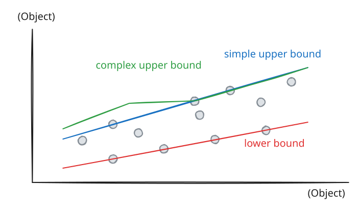
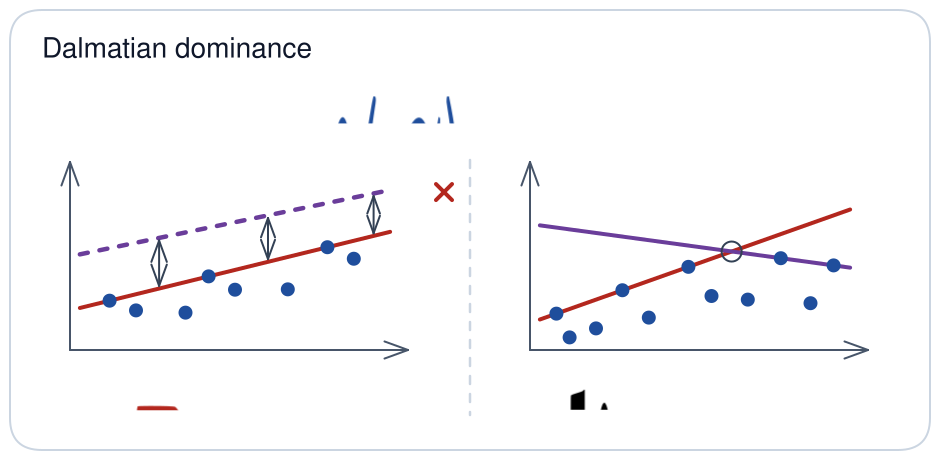
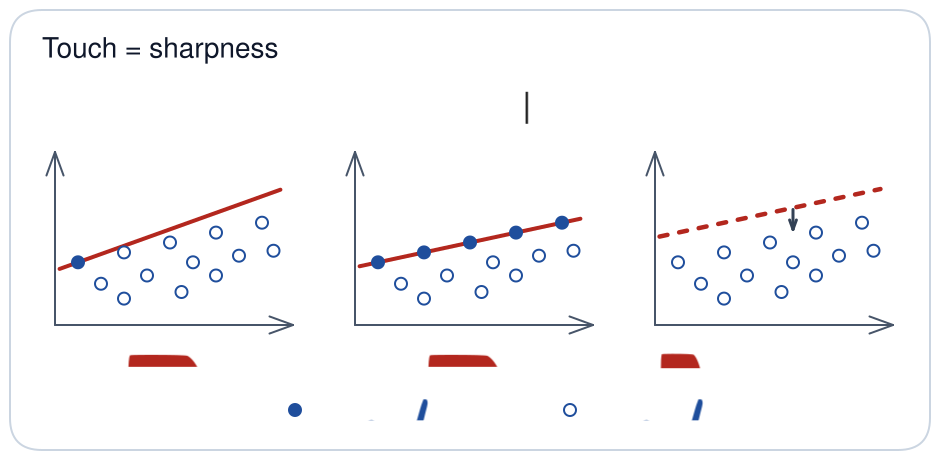
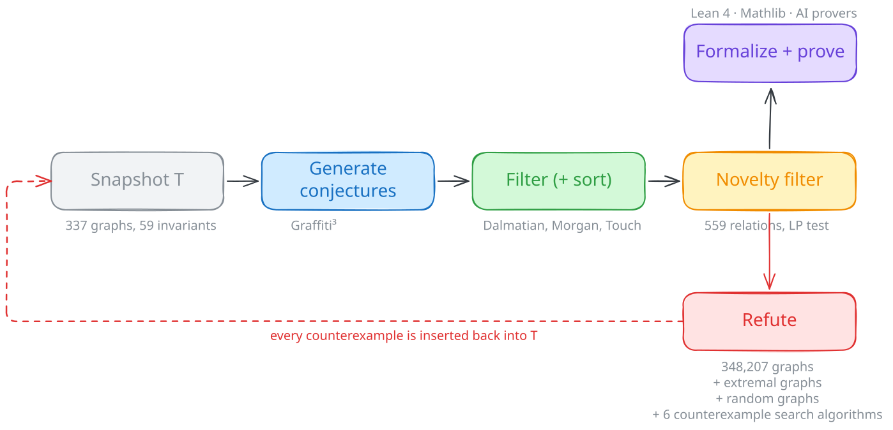
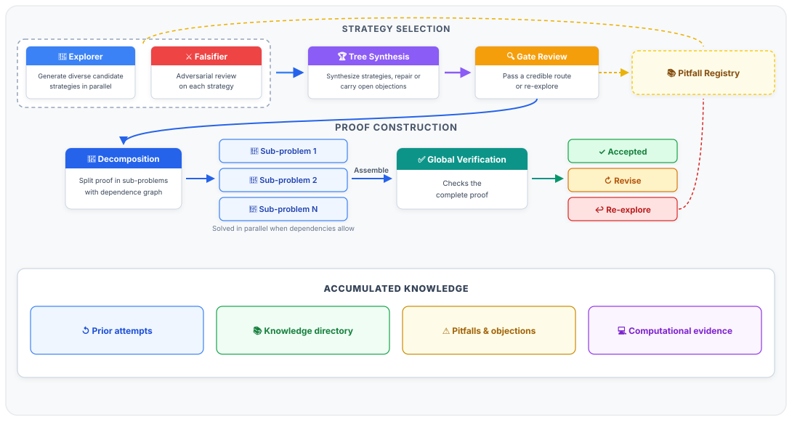
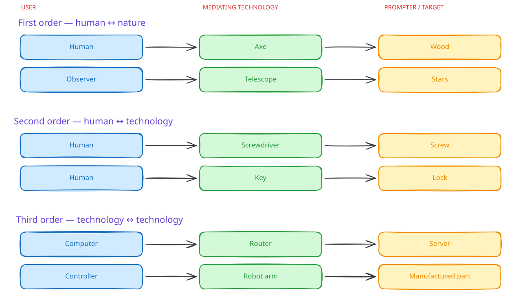

<!DOCTYPE html>
<html lang="en">
  <head>
    <meta charset="utf-8" />
    <meta name="viewport" content="width=device-width, initial-scale=1.0, maximum-scale=1.0, user-scalable=no" />

    <title>AutoGraphForge</title>
    <link rel="stylesheet" href="dist/reveal.css" />
    <link rel="stylesheet" href="dist\theme\beamer.css" id="theme" />
    <link rel="stylesheet" href="plugin\highlight\monokai.css" />
	<link rel="stylesheet" href="css/layout.css" />
	<link rel="stylesheet" href="plugin/customcontrols/style.css">
	<link rel="stylesheet" href="plugin/chalkboard/style.css">

	<link rel="stylesheet" href="plugin/reveal-pointer/pointer.css" />

    

    <script defer src="dist/fontawesome/all.min.js"></script>

	<!-- reveal 4 carries its print rules inside reveal.css; the separate
	     dist/theme/print/pdf.css is a reveal 3 leftover that 404s on every load. -->

	<script type="text/javascript">
		/* Deck-level typography and callout colours, both set in the YAML frontmatter:
		 *
		 *   fontSize: 26px          # or just: 26  — base text size for the whole deck
		 *   titleSize: 44           # '# ' slide titles
		 *   subtitleSize: 32        # '## ' slide headings
		 *   calloutPalette: vivid   # saturated, projector-safe callout colours
		 *   calloutColors:          # per-callout-type overrides, any CSS colour
		 *     example: "#6d28d9"
		 *     question: "#b45309"
		 */
		var DECK_FONT_SIZE = "22";
		var DECK_TITLE_SIZE = "26";
		var DECK_SUBTITLE_SIZE = "22";
		var DECK_SLIDE_TITLE_SIZE = "24";
		var CALLOUT_PALETTE = "vivid";
		var CALLOUT_COLORS = {
			
			
			
			
			
			
			
			
			
			
			
			
			"question": "#b45309",
			
			
			
			
			
			
			
			
			
			
			
			"example": "#b91c1c",
			
			
			"theorem": "#1e40af",
			
			
			
			
			
			
			
			
			
			
		};
	</script>

	<script type="text/javascript">
		(function () {
			// --- base font size -------------------------------------------------
			function cssSize(value) {
				var v = (value || '').trim();
				if (!v) return '';
				return /^[0-9]+(\.[0-9]+)?$/.test(v) ? v + 'px' : v;   // bare number means px
			}

			// Utility classes such as .compact and .shrink set their own heading size with
			// !important and at a higher specificity, so a deck setting has to be restated
			// for them or it lands on plain slides only -- which looked like the setting
			// being ignored on half the deck.
			function headingRule(tail, size) {
				var selectors = [
					'.reveal .slides section' + tail,
					'.reveal .slides section.compact' + tail,
					'.reveal .slides section.shrink' + tail,
					'.reveal .slides section.dense' + tail
				];
				return selectors.join(',') + '{font-size:' + size + ' !important;}';
			}

			function applyFontSize() {
				var fs = cssSize(DECK_FONT_SIZE);
				var title = cssSize(DECK_TITLE_SIZE);
				var subtitle = cssSize(DECK_SUBTITLE_SIZE);
				// The per-slide heading. Without its own setting it follows subtitleSize,
				// which is what it did before this knob existed.
				var slideTitle = cssSize(DECK_SLIDE_TITLE_SIZE) || subtitle;
				var rules = [];

				if (fs) {
					rules.push(':root{--r-main-font-size:' + fs + ';}');
					rules.push('.reveal{font-size:' + fs + ' !important;}');
				}
				// Headings are em-based in the theme, so an explicit size here also keeps
				// them fixed while auto-shrink scales the body text down around them.
				if (title) rules.push(headingRule(' h1', title));
				// On the title slide the h2 is the deck's subtitle; anywhere else it is the
				// slide's own title, which is the heading the audience reads all talk.
				if (subtitle) rules.push(headingRule(':has(h1) h2', subtitle));
				if (slideTitle) rules.push(headingRule(':not(:has(h1)) h2', slideTitle));

				if (!rules.length) return;
				var st = document.createElement('style');
				st.textContent = rules.join('\n');
				document.head.appendChild(st);
			}

			// --- callout colours ------------------------------------------------
			// Every callout variant is painted from a single custom property holding
			// an "r, g, b" triple (title bar, border and the proof marker all read it),
			// so recolouring a type is just a matter of redefining that triple.
			var TYPE_CLASS = {
				abstract: 'callout-color1', summary: 'callout-color1', tldr: 'callout-color1', info: 'callout-color1',
				axiom: 'callout-color1', notation: 'callout-color1', remark: 'callout-color1',
				todo: 'callout-color2', tip: 'callout-color2', hint: 'callout-color2', important: 'callout-color2',
				success: 'callout-color3', check: 'callout-color3', done: 'callout-color3',
				question: 'callout-color4', help: 'callout-color4', faq: 'callout-color4',
				warning: 'callout-color5', caution: 'callout-color5', attention: 'callout-color5',
				failure: 'callout-color6', fail: 'callout-color6', missing: 'callout-color6',
				danger: 'callout-color7', error: 'callout-color7', bug: 'callout-color7',
				example: 'callout-color8',
				quote: 'callout-color9', cite: 'callout-color9',
				theorem: 'callout-theorem', lemma: 'callout-lemma', corollary: 'callout-corollary',
				definition: 'callout-definition', proof: 'callout-proof',
				proposition: 'callout-proposition', algorithm: 'callout-algorithm',
				note: 'callout-color-default', 'default': 'callout-color-default'
			};

			// Saturated, high-contrast set for data projectors, where the stock
			// pastels wash out behind white title text.
			var PALETTES = {
				vivid: {
					info: '#1d4ed8', tip: '#047857', success: '#15803d', question: '#b45309',
					warning: '#c2410c', failure: '#be123c', danger: '#b91c1c', example: '#6d28d9',
					quote: '#475569', note: '#0f766e',
					theorem: '#1e40af', lemma: '#0e7490', corollary: '#6d28d9',
					definition: '#15803d', proof: '#475569', proposition: '#b45309', algorithm: '#0369a1'
				}
			};

			function toTriple(color) {
				var c = String(color).trim();
				var m = /^#([0-9a-f]{3}|[0-9a-f]{6})$/i.exec(c);
				if (m) {
					var h = m[1];
					if (h.length === 3) h = h[0] + h[0] + h[1] + h[1] + h[2] + h[2];
					return parseInt(h.substr(0, 2), 16) + ', ' + parseInt(h.substr(2, 2), 16) + ', ' + parseInt(h.substr(4, 2), 16);
				}
				var probe = document.createElement('span');
				probe.style.display = 'none';
				probe.style.color = c;
				if (!probe.style.color) return null;            // not a colour the browser knows
				(document.body || document.documentElement).appendChild(probe);
				var resolved = window.getComputedStyle(probe).color;
				probe.parentNode.removeChild(probe);
				var rgb = /rgba?\(\s*([0-9.]+)[,\s]+([0-9.]+)[,\s]+([0-9.]+)/.exec(resolved);
				return rgb ? (Math.round(rgb[1]) + ', ' + Math.round(rgb[2]) + ', ' + Math.round(rgb[3])) : null;
			}

			function applyCalloutColors() {
				var wanted = {};
				var preset = PALETTES[(CALLOUT_PALETTE || '').trim().toLowerCase()];
				var k;
				if (preset) { for (k in preset) wanted[k] = preset[k]; }
				for (k in CALLOUT_COLORS) { if (CALLOUT_COLORS[k]) wanted[k] = CALLOUT_COLORS[k]; }

				var rules = [];
				var unknown = [];
				for (k in wanted) {
					var key = k.toLowerCase();
					// accept either a callout type (example, warning, …) or a raw slot (color1 … color9)
					var cls = TYPE_CLASS[key] || (/^color[1-9]$/.test(key) ? 'callout-' + key : null);
					var triple = toTriple(wanted[k]);
					if (!cls || !triple) { unknown.push(k + ': ' + wanted[k]); continue; }
					rules.push('.reveal .' + cls + '{--callout-color:' + triple + ' !important;}');
				}
				if (unknown.length) console.warn('[Beamer] ignored calloutColors entries:', unknown.join(' | '));
				if (!rules.length) return;
				var st = document.createElement('style');
				st.textContent = rules.join('\n');
				document.head.appendChild(st);
			}

			applyFontSize();
			if (document.body) {
				applyCalloutColors();
			} else {
				document.addEventListener('DOMContentLoaded', applyCalloutColors);
			}
		})();
	</script>

	<style>


		/* Precision scientific typography and utility scaling */
		.reveal .tiny, .reveal .text-xs { font-size: 0.65em !important; line-height: 1.3; }
		.reveal .small, .reveal .text-sm { font-size: 0.82em !important; line-height: 1.35; }
		.reveal .normal, .reveal .text-md { font-size: 1.0em !important; }
		.reveal .large, .reveal .text-lg { font-size: 1.25em !important; line-height: 1.25; }
		.reveal .huge, .reveal .text-xl { font-size: 1.55em !important; line-height: 1.2; }

		/* Alignment utilities */
		.reveal .text-left { text-align: left !important; }
		.reveal .text-right { text-align: right !important; }
		.reveal .text-center { text-align: center !important; }
		.reveal .text-justify { text-align: justify !important; }
		.reveal .items-start { align-items: flex-start !important; }
		.reveal .items-center { align-items: center !important; }
		.reveal .items-end { align-items: flex-end !important; }

		/* LaTeX Beamer Header Outline & Footline Base Styles */
		.beamer-header {
			position: fixed;
			top: 0;
			left: 0;
			width: 100%;
			height: 38px;
			z-index: 35 !important;
			display: flex;
			align-items: center;
			justify-content: center;
			pointer-events: auto;
			box-sizing: border-box;
			background: var(--beamer-header-bg, rgba(255, 255, 255, 0.95));
			border-bottom: 1.5px solid var(--beamer-header-border, rgba(0, 70, 110, 0.2));
			font-size: 13px;
			transition: opacity 0.2s ease;
		}
		.beamer-header-nav {
			display: flex;
			align-items: center;
			justify-content: center;
			gap: 14px;
			flex-wrap: wrap;
			padding: 0 16px;
		}
		.beamer-header-section {
			display: inline-flex;
			flex-direction: column;
			align-items: center;
			cursor: pointer;
			padding: 3px 10px;
			border-radius: 4px;
			color: var(--beamer-header-text, #64748b);
			font-weight: 500;
			transition: all 0.2s ease;
			user-select: none;
		}
		.beamer-header-section:hover {
			color: var(--beamer-header-active-text, #00466e);
			background: var(--beamer-header-hover-bg, rgba(0, 70, 110, 0.06));
		}
		.beamer-header-section.is-active {
			color: var(--beamer-header-active-text, #00466e);
			font-weight: 700;
			background: var(--beamer-header-active-bg, #eaf0f5);
			box-shadow: inset 0 -2px 0 var(--beamer-header-active-border, #00466e);
		}
		.beamer-header-dots {
			display: flex;
			gap: 4px;
			margin-top: 2px;
		}
		.beamer-header-dot {
			width: 6px;
			height: 6px;
			border-radius: 50%;
			background: var(--beamer-dot-bg, rgba(100, 116, 139, 0.35));
			cursor: pointer;
			transition: all 0.15s ease;
		}
		.beamer-header-dot:hover {
			transform: scale(1.4);
		}
		.beamer-header-dot.is-active {
			background: var(--beamer-dot-active-bg, #00466e);
			transform: scale(1.3);
		}
		.beamer-footer {
			position: fixed;
			bottom: 0;
			left: 0;
			width: 100%;
			height: 28px;
			line-height: 28px;
			z-index: 35 !important;
			display: flex;
			align-items: center;
			justify-content: space-between;
			padding: 0 16px;
			box-sizing: border-box;
			background: var(--beamer-footer-bg, #eaf0f5);
			border-top: 1px solid var(--beamer-footer-border, rgba(0, 70, 110, 0.22));
			font-size: 12px;
			color: var(--beamer-footer-text, #00466e);
			pointer-events: auto;
			transition: opacity 0.2s ease;
		}
		.reveal.has-beamer-footer .slide-number {
			display: none !important;
		}
		.beamer-footer-left {
			font-weight: 600;
			overflow: hidden;
			text-overflow: ellipsis;
			white-space: nowrap;
			max-width: 33%;
		}
		.beamer-footer-center {
			font-weight: 500;
			overflow: hidden;
			text-overflow: ellipsis;
			white-space: nowrap;
			max-width: 38%;
			text-align: center;
		}
		.beamer-footer-right {
			display: flex;
			align-items: center;
			gap: 12px;
			white-space: nowrap;
			font-weight: 600;
		}
		.beamer-footer-page {
			background: var(--beamer-footer-page-bg, rgba(0, 70, 110, 0.12));
			padding: 1px 7px;
			border-radius: 3px;
			font-family: 'Fira Code', monospace;
			font-size: 11px;
		}
		.reveal.has-beamer-header .slides section {
			padding-top: 48px !important;
		}
		.reveal.has-beamer-footer .slides section {
			padding-bottom: 38px !important;
		}
		/* Base print elements hidden on screen */
		.beamer-header-print,
		.beamer-footer-print {
			display: none !important;
		}

		/* Active when in print mode */
		html.print-pdf #beamerHeader,
		html.print-pdf #beamerFooter,
		html.print-pdf .reveal > #beamerHeader,
		html.print-pdf .reveal > #beamerFooter {
			display: none !important;
			visibility: hidden !important;
			opacity: 0 !important;
		}

		html.print-pdf .beamer-header-print,
		html.print-pdf .beamer-footer-print {
			display: flex !important;
		}

		html.print-pdf .slide-number-pdf {
			display: none !important;
		}

		@media print {
			#beamerPrintReady { display: none !important; }
		}

		/* Strict 1-slide = 1-page PDF constraints */
		html.print-pdf .reveal .slides .pdf-page,
		html.print-pdf .pdf-page {
			position: relative !important;
			box-sizing: border-box !important;
			width: 960px !important;
			height: 540px !important;
			max-height: 540px !important;
			min-height: 540px !important;
			overflow: hidden !important;
			page-break-inside: avoid !important;
			break-inside: avoid !important;
			page-break-after: always !important;
			break-after: page !important;
		}

		/* Eliminate trailing empty page after last slide */
		html.print-pdf .reveal .slides .pdf-page:last-child,
		html.print-pdf .reveal .slides .pdf-page:last-of-type,
		html.print-pdf .pdf-page:last-child,
		html.print-pdf .pdf-page:last-of-type {
			page-break-after: avoid !important;
			break-after: avoid !important;
		}

		/* Prevent overlap: Push slide content below 38px outline in print mode */
		html.print-pdf .pdf-page > section:not(.title-slide) {
			position: absolute !important;
			top: 40px !important;
			left: 0 !important;
			width: 960px !important;
			max-width: 960px !important;
			/* Reveal's print CSS zeroes the slide padding; restore the theme's
			   horizontal padding so printed slides keep the same left/right
			   margin as on screen and full-bleed headings don't run off the page. */
			padding: 0 36px !important;
			height: calc(540px - 72px) !important;
			max-height: calc(540px - 72px) !important;
			box-sizing: border-box !important;
			overflow: hidden !important;
			page-break-inside: avoid !important;
			break-inside: avoid !important;
		}

		html.print-pdf .pdf-page > section.title-slide {
			position: absolute !important;
			top: 0 !important;
			left: 0 !important;
			width: 960px !important;
			max-width: 960px !important;
			padding: 0 36px !important;
			height: calc(540px - 32px) !important;
			max-height: calc(540px - 32px) !important;
			box-sizing: border-box !important;
			overflow: hidden !important;
			page-break-inside: avoid !important;
			break-inside: avoid !important;
		}

		html.print-pdf .pdf-page > section > div[absolute="true"],
		html.print-pdf .pdf-page > section > div.drop {
			position: absolute !important;
			top: 0 !important;
			left: 0 !important;
			width: 100% !important;
			height: 100% !important;
			/* The wrapper carries an inline min-height of the full slide height (540px),
			   which would otherwise beat height:100% and run 72px past the printed page. */
			min-height: 0 !important;
			max-height: 100% !important;
			overflow: visible !important;
			page-break-inside: avoid !important;
			break-inside: avoid !important;
		}

		/* Every slide's content is wrapped in an absolutely positioned full-slide box
		   (DropProcessor), which bypasses the theme's padding on .slides section —
		   so give the wrapper itself the side margin, on screen and in print. */
		.reveal .slides section > div[absolute="true"],
		.reveal .slides section > div.drop {
			box-sizing: border-box !important;
			padding-left: 36px !important;
			padding-right: 36px !important;
		}

		/* The heading bar is width:100% with 22px of side padding. Without border-box
		   it measures 44px wider than its container and runs off the right edge
		   wherever the wrapper is stretched to full width (i.e. in print). */
		.reveal h1,
		.reveal h2 {
			box-sizing: border-box !important;
			max-width: 100% !important;
		}

		/* A full-bleed image scales with its container, so auto-shrink can't pull it
		   out of the footer; clamp it to the printable content height instead. */
		html.print-pdf .pdf-page > section video {
			max-height: 100% !important;
			min-height: 0 !important;
			flex-shrink: 1 !important;
			object-fit: contain !important;
		}
		html.print-pdf .pdf-page > section img:not(.emoji):not(.icon) {
			max-height: 100% !important;
			/* min-height:auto stops a flex item from shrinking below its intrinsic
			   size, so the image kept its full height and its margins pushed it
			   under the footer; min-height:0 lets it shrink into what's left. */
			min-height: 0 !important;
			flex-shrink: 1 !important;
			object-fit: scale-down !important;
		}

		/* Compact, clean LaTeX Beamer callout spacing */
		.reveal .callout {
			margin: 0.45rem 0 !important;
		}
		.reveal .callout .callout-title p {
			margin: 0 !important;
		}
		.reveal .callout .callout-content p {
			margin: 0.35rem 0 !important;
		}
		.reveal .callout .callout-content p:last-child {
			margin-bottom: 0 !important;
		}

		@media print {
			#beamerHeader,
			#beamerFooter,
			.reveal > #beamerHeader,
			.reveal > #beamerFooter {
				display: none !important;
				visibility: hidden !important;
				opacity: 0 !important;
			}

			.beamer-header-print,
			.beamer-footer-print {
				display: flex !important;
			}

			.slide-number-pdf {
				display: none !important;
			}

			.reveal .slides .pdf-page,
			.pdf-page {
				position: relative !important;
				box-sizing: border-box !important;
				width: 960px !important;
				height: 540px !important;
				max-height: 540px !important;
				min-height: 540px !important;
				overflow: hidden !important;
				page-break-inside: avoid !important;
				break-inside: avoid !important;
				page-break-after: always !important;
				break-after: page !important;
			}

			.reveal .slides .pdf-page:last-child,
			.reveal .slides .pdf-page:last-of-type,
			.pdf-page:last-child,
			.pdf-page:last-of-type {
				page-break-after: avoid !important;
				break-after: avoid !important;
			}

			.pdf-page > section:not(.title-slide) {
				position: absolute !important;
				top: 40px !important;
				left: 0 !important;
				width: 960px !important;
				max-width: 960px !important;
				height: calc(540px - 72px) !important;
				max-height: calc(540px - 72px) !important;
				box-sizing: border-box !important;
				overflow: hidden !important;
				page-break-inside: avoid !important;
				break-inside: avoid !important;
			}

			.pdf-page > section.title-slide {
				position: absolute !important;
				top: 0 !important;
				left: 0 !important;
				width: 960px !important;
				max-width: 960px !important;
				height: calc(540px - 32px) !important;
				max-height: calc(540px - 32px) !important;
				box-sizing: border-box !important;
				overflow: hidden !important;
				page-break-inside: avoid !important;
				break-inside: avoid !important;
			}

			.pdf-page > section > div[absolute="true"],
			.pdf-page > section > div.drop {
				position: absolute !important;
				top: 0 !important;
				left: 0 !important;
				width: 100% !important;
				height: 100% !important;
				overflow: visible !important;
				page-break-inside: avoid !important;
				break-inside: avoid !important;
			}
		}

		/* Strictly hide any stray duplicate header/footer inside section */
		.reveal section .beamer-header-print,
		.reveal section .beamer-footer-print,
		.reveal section .beamer-header,
		.reveal section .beamer-footer {
			display: none !important;
		}

		.beamer-header-print {
			position: absolute !important;
			top: 0 !important;
			left: 0 !important;
			width: 100% !important;
			height: 38px !important;
			z-index: 9999 !important;
			display: flex !important;
			align-items: center !important;
			justify-content: center !important;
			background: var(--beamer-header-bg, #ffffff) !important;
			border-bottom: 1.5px solid var(--beamer-header-border, rgba(0, 70, 110, 0.2)) !important;
			box-sizing: border-box !important;
			font-size: 13px !important;
			color: var(--beamer-header-text, #64748b) !important;
		}

		.beamer-footer-print {
			position: absolute !important;
			bottom: 0 !important;
			left: 0 !important;
			width: 100% !important;
			height: 28px !important;
			/* Line boxes must end strictly inside the page: a footer line that
			   reaches past the page height (line-height 28 in a 27px content box
			   ended at y 541 of a 540px page) is moved off the page by Chrome's
			   paginated printing and then clipped away — the bar's background
			   still prints, but its text silently disappears from the PDF. */
			line-height: 18px !important;
			overflow: hidden !important;
			z-index: 9999 !important;
			display: flex !important;
			align-items: center !important;
			justify-content: space-between !important;
			padding: 0 18px !important;
			background: var(--beamer-footer-bg, #f1f5f9) !important;
			border-top: 1px solid var(--beamer-footer-border, rgba(0, 70, 110, 0.22)) !important;
			box-sizing: border-box !important;
			font-size: 12px !important;
			color: var(--beamer-footer-text, #0b2545) !important;
		}

		.beamer-header-print .beamer-header-nav {
			display: flex !important;
			align-items: center !important;
			justify-content: center !important;
			gap: 14px !important;
			flex-wrap: wrap !important;
			padding: 0 16px !important;
		}

		.beamer-header-print .beamer-header-section {
			display: inline-flex !important;
			flex-direction: column !important;
			align-items: center !important;
			padding: 2px 8px !important;
			border-radius: 4px !important;
			color: var(--beamer-header-text, #64748b) !important;
			font-weight: 500 !important;
		}

		.beamer-header-print .beamer-header-section.is-active {
			color: var(--beamer-header-active-text, #0b2545) !important;
			font-weight: 700 !important;
			background: var(--beamer-header-active-bg, #eaf0f5) !important;
			box-shadow: inset 0 -2px 0 var(--beamer-header-active-border, #00466e) !important;
		}

		.beamer-header-print .beamer-header-dots {
			display: flex !important;
			gap: 4px !important;
			margin-top: 2px !important;
		}

		.beamer-header-print .beamer-header-dot {
			width: 6px !important;
			height: 6px !important;
			border-radius: 50% !important;
			background: var(--beamer-dot-bg, rgba(19, 64, 116, 0.25)) !important;
		}

		.beamer-header-print .beamer-header-dot.is-active {
			background: var(--beamer-dot-active-bg, #1d4ed8) !important;
		}

		.beamer-footer-print > *,
		.beamer-footer-print * {
			line-height: 18px !important;
			max-height: 20px !important;
		}

		.beamer-footer-print .beamer-footer-left {
			font-weight: 600 !important;
			overflow: hidden !important;
			text-overflow: ellipsis !important;
			white-space: nowrap !important;
			max-width: 33% !important;
		}

		.beamer-footer-print .beamer-footer-center {
			font-weight: 500 !important;
			overflow: hidden !important;
			text-overflow: ellipsis !important;
			white-space: nowrap !important;
			max-width: 38% !important;
			text-align: center !important;
		}

		.beamer-footer-print .beamer-footer-right {
			display: flex !important;
			align-items: center !important;
			gap: 12px !important;
			white-space: nowrap !important;
			font-weight: 600 !important;
		}

		.beamer-footer-print .beamer-footer-page {
			background: rgba(19, 64, 116, 0.12) !important;
			padding: 1px 7px !important;
			border-radius: 3px !important;
			font-family: 'Fira Code', monospace !important;
			font-size: 11px !important;
		}

		@media print {
			@page {
				size: 297mm 167.0625mm;
				margin: 0;
			}
			html, body {
				width: 100% !important;
				height: 100% !important;
				margin: 0 !important;
				padding: 0 !important;
				background-color: var(--r-background-color, #ffffff) !important;
				-webkit-print-color-adjust: exact !important;
				print-color-adjust: exact !important;
			}
			.reveal .controls,
			.reveal .progress,
			.reveal-pointer,
			.time-bar,
			.chalkboard-button {
				display: none !important;
			}
			svg, img {
				max-width: 100% !important;
				height: auto !important;
				shape-rendering: geometricPrecision !important;
				text-rendering: geometricPrecision !important;
			}
		}

		/* Clean Image Tables (Grid-like presentation without data table chrome) */
		.reveal table:has(img),
		.reveal table.image-table,
		.reveal table.grid-table {
			border-collapse: separate !important;
			border-spacing: 12px 10px !important;
			box-shadow: none !important;
			background: transparent !important;
			margin: 0.5rem auto !important;
			border: none !important;
			width: auto !important;
			max-width: 720px !important;
		}

		.reveal table:has(img) thead,
		.reveal table:has(img) thead tr,
		.reveal table:has(img) thead th,
		.reveal table.image-table thead,
		.reveal table.grid-table thead {
			display: none !important;
			visibility: hidden !important;
			height: 0 !important;
			padding: 0 !important;
			border: none !important;
		}

		.reveal table:has(img) tbody,
		.reveal table.image-table tbody,
		.reveal table.grid-table tbody {
			display: table-row-group !important;
		}

		.reveal table:has(img) tr,
		.reveal table:has(img) tr:nth-child(even) td,
		.reveal table:has(img) tr:nth-child(odd) td,
		.reveal table.image-table tr,
		.reveal table.image-table td,
		.reveal table.grid-table tr,
		.reveal table.grid-table td {
			background: transparent !important;
			border: none !important;
			box-shadow: none !important;
		}

		.reveal table:has(img) td,
		.reveal table.image-table td,
		.reveal table.grid-table td {
			border: none !important;
			background: transparent !important;
			padding: 4px 8px !important;
			text-align: center !important;
			vertical-align: middle !important;
		}

		.reveal table:has(img) td img,
		.reveal table.image-table td img,
		.reveal table.grid-table td img {
			display: block !important;
			margin: 0 auto !important;
			max-width: 320px !important;
			width: 100% !important;
			height: auto !important;
			box-shadow: 0 3px 10px rgba(0, 0, 0, 0.08) !important;
			border-radius: 6px !important;
		}

		/* Center standalone images in slides */
		.reveal section img:not(.emoji):not(.icon) {
			display: block !important;
			margin-left: auto !important;
			margin-right: auto !important;
			align-self: center !important;
		}

		/* A clip is laid out like a picture: centred, and never wider than the slide.
		   Without max-width an mp4 renders at its intrinsic size and runs off the edge. */
		.reveal section video,
		.reveal section audio {
			display: block !important;
			margin-left: auto !important;
			margin-right: auto !important;
			align-self: center !important;
			max-width: 100% !important;
		}
		.reveal section video {
			max-height: 100% !important;
			min-height: 0 !important;
			flex-shrink: 1 !important;
			object-fit: contain !important;
			background: #000;
		}
		.reveal section audio {
			width: 70% !important;
		}

		/* Utility classes for content-dense slides */
		.reveal .slides section.compact,
		.reveal .slides section.shrink {
			font-size: 0.90em !important;
		}
		.reveal .slides section.compact h2,
		.reveal .slides section.shrink h2 {
			font-size: 1.35em !important;
			margin-bottom: 0.35rem !important;
		}
		.reveal .slides section.compact p,
		.reveal .slides section.compact li,
		.reveal .slides section.shrink p,
		.reveal .slides section.shrink li {
			line-height: 1.35 !important;
			margin-bottom: 0.25rem !important;
		}
		.reveal .slides section.compact .callout,
		.reveal .slides section.shrink .callout {
			padding: 10px 14px !important;
			margin: 0.35rem 0 !important;
			font-size: 1.0em !important;
		}

		.reveal .slides section.dense {
			font-size: 0.82em !important;
		}
		.reveal .slides section.dense table {
			font-size: 0.95em !important;
		}
		.reveal .slides section.dense td,
		.reveal .slides section.dense th {
			padding: 4px 7px !important;
		}
	</style>

	<script type="text/javascript">
		var forgetPop = true;
		// Only Obsidian's preview pane can receive this. Presenting from a browser (or
		// opening the exported HTML) makes the fixed target origin illegal, and the call
		// threw a DOMException on every history change — i.e. on every slide change.
		function notifyObsidian(href) {
			try {
				if (window.parent && window.parent !== window) {
					window.parent.postMessage(href, "app://obsidian.md");
				}
			} catch (err) {
				/* not running inside Obsidian: there is nobody to notify */
			}
		}

		function onPopState(event) {
			if(forgetPop){
				forgetPop = false;
			} else {
				notifyObsidian(event.target.location.href);
			}
        }
		window.onpopstate = onPopState;
		window.onmessage = event => {
			if(event.data == "reload"){
				window.document.location.reload();
			}
			forgetPop = true;
		}

		function fitElements(){
			const itemsToFit = document.getElementsByClassName('fitText');
			for (const item in itemsToFit) {
				if (Object.hasOwnProperty.call(itemsToFit, item)) {
					var element = itemsToFit[item];
					fitElement(element,1, 1000);
					element.classList.remove('fitText');
				}
			}
		}

		function fitElement(element, start, end){

			let size = (end + start) / 2;
			element.style.fontSize = `${size}px`;

			if(Math.abs(start - end) < 1){
				while(element.scrollHeight > element.offsetHeight){
					size--;
					element.style.fontSize = `${size}px`;
				}
				return;
			}

			if(element.scrollHeight > element.offsetHeight){
				fitElement(element, start, size);
			} else {
				fitElement(element, size, end);
			}		
		}


		function unwrapMathCode() {
			document.querySelectorAll('code').forEach(function(el) {
				var text = el.textContent.trim();
				var isDisplay = (text.startsWith('$$') && text.endsWith('$$') && text.length >= 4) ||
								(text.startsWith('\\[') && text.endsWith('\\]') && text.length >= 4);
				var isInline = text.startsWith('$') && text.endsWith('$') && text.length >= 2 && !text.includes('\n');
				if (isDisplay || isInline) {
					var parent = el.parentNode;
					if (parent && parent.tagName === 'PRE') {
						var container = document.createElement('div');
						container.appendChild(document.createTextNode(text));
						parent.parentNode.replaceChild(container, parent);
					} else if (parent) {
						parent.replaceChild(document.createTextNode(text), el);
					}
				}
			});
		}

		function formatSectionNavName(rawName) {
			if (!rawName) return '';
			var clean = rawName
				.replace(/`[^`]*`/g, '')
				.replace(/\\pause/gi, '')
				.replace(/\$[^$]*\$/g, '')
				.replace(/[*_#]/g, '')
				.replace(/\s+/g, ' ')
				.trim();

			// Handle Stage X of Y / Part X patterns
			var stageMatch = clean.match(/^(stage|part|section|fáza|kapitola)\s+(\d+)(?:\s+of\s+\d+)?(?:\s*[:–—\-]\s*(.*))?$/i);
			if (stageMatch) {
				var prefix = stageMatch[1].charAt(0).toUpperCase() + stageMatch[1].slice(1).toLowerCase();
				var num = stageMatch[2];
				var sub = stageMatch[3] ? stageMatch[3].trim() : '';
				if (sub) {
					var subParts = sub.split(/\s*[:–—]\s*|\s+-\s+/);
					var subText = subParts[0].trim().replace(/^find\s+/i, '');
					if (subText.length > 0) {
						subText = subText.charAt(0).toUpperCase() + subText.slice(1);
					}
					if (subText.length > 15) {
						subText = subText.substring(0, 13) + '…';
					}
					return prefix + ' ' + num + ': ' + subText;
				}
				return prefix + ' ' + num;
			}

			// Clean specific well-known titles
			if (/^roots\b/i.test(clean)) return 'Roots';
			if (/^the loop\b|^proving\b/i.test(clean)) return 'Proving';
			if (/^thank\s*you|^conclusion|^summary/i.test(clean)) return 'Perspectives';

			var parts = clean.split(/\s*[:–—]\s*|\s+-\s+|\s+with\s+/i);
			var candidate = parts[0].trim();
			if (candidate.length < 3 && parts.length > 1) {
				candidate = (parts[0] + ': ' + parts[1]).trim();
			}
			if (candidate.length > 18) {
				var truncated = candidate.substring(0, 16);
				var lastSpace = truncated.lastIndexOf(' ');
				if (lastSpace > 6) {
					candidate = truncated.substring(0, lastSpace) + '…';
				} else {
					candidate = truncated + '…';
				}
			}
			return candidate || clean;
		}

		function initBeamerLayout(config) {
			console.log('[Beamer] initBeamerLayout called with config:', config);
			if (!config) config = {};

			var themeLink = document.querySelector('link#theme');
			var themeHref = themeLink ? (themeLink.getAttribute('href') || '') : '';
			var isBeamerTheme = themeHref.includes('beamer') || themeHref.includes('metropolis') || document.body.classList.contains('beamer');

			// Auto-enable headerOutline and footer for Beamer themes unless explicitly disabled
			if (config.headerOutline === undefined) {
				config.headerOutline = isBeamerTheme;
			}
			if (config.footer === undefined) {
				config.footer = isBeamerTheme;
			}

			if (!config.headerOutline && !config.footer) return;

			var revealEl = document.querySelector('.reveal');
			if (!revealEl) {
				console.warn('[Beamer] No .reveal element found in DOM');
				return;
			}

			var oldH = document.getElementById('beamerHeader');
			if (oldH) oldH.remove();
			var oldF = document.getElementById('beamerFooter');
			if (oldF) oldF.remove();

			// Get all leaf slides (ignoring vertical section wrappers)
			var slidesEls = (window.Reveal && typeof window.Reveal.getSlides === 'function')
				? window.Reveal.getSlides()
				: Array.from(document.querySelectorAll('.reveal .slides section')).filter(function(s) {
					return s.querySelectorAll('section').length === 0;
				});

			console.log('[Beamer] Found slides count:', slidesEls.length);
			if (!slidesEls.length) return;

			// Tag every slide with its permanent 0-based slide index
			slidesEls.forEach(function(slide, idx) {
				slide.setAttribute('data-slide-index', idx);
			});

			// 1. Determine Title, Author, Institute, Date if not provided
			var presentationTitle = config.shortTitle || config.title;
			if (!presentationTitle) {
				var firstH1 = document.querySelector('.reveal .slides section h1');
				if (firstH1) {
					presentationTitle = firstH1.textContent.trim().split('\n')[0].trim();
				} else if (document.title && document.title !== 'reveal.js') {
					presentationTitle = document.title.split('—')[0].trim();
				} else {
					presentationTitle = '';
				}
			}

			var author = config.author || '';
			var institute = config.institute || '';
			var date = config.date || '';

			if ((!author || !institute || !date) && slidesEls.length > 0) {
				var s0 = slidesEls[0];
				var paras = Array.from(s0.querySelectorAll('p, div, li, span'));
				for (var p = 0; p < paras.length; p++) {
					var pText = paras[p].textContent.trim();
					if (!author && pText.includes('·')) {
						var dotParts = pText.split('·');
						author = dotParts[0].trim();
						if (!institute && dotParts.length > 1) {
							institute = dotParts[1].trim();
						}
					}
					if (!date) {
						var dateMatch = pText.match(/\b\d{1,2}\s*[\.\/]\s*\d{1,2}\.?\s*\d{4}\b|\b(19\d\d|20\d\d)\b/);
						if (dateMatch) {
							date = dateMatch[0];
						}
					}
				}
			}

			// 2. Discover Sections Outline
			var sections = [];

			function normalizeSectionString(val) {
				if (val === null || val === undefined) return '';
				if (typeof val === 'string') return val;
				if (typeof val === 'object') {
					var entries = Object.entries(val);
					if (entries.length > 0) {
						return entries.map(function(e) {
							return (e[1] !== null && e[1] !== undefined && String(e[1]).trim() !== '') 
								? (e[0] + ': ' + e[1]) 
								: e[0];
						}).join(', ');
					}
					return '';
				}
				return String(val);
			}

			function matchSection(heading, sectionName) {
				var hStr = normalizeSectionString(heading);
				var sStr = normalizeSectionString(sectionName);
				if (!hStr || !sStr) return false;
				var hNorm = hStr.toLowerCase().replace(/[^a-z0-9]+/g, ' ').trim();
				var sNorm = sStr.toLowerCase().replace(/[^a-z0-9]+/g, ' ').trim();
				if (hNorm === sNorm || hNorm.includes(sNorm) || sNorm.includes(hNorm)) return true;

				var sWords = sNorm.split(/\s+/).filter(function(w) {
					return w.length > 1 && !['of', 'the', 'in', 'and', 'for', 'to'].includes(w);
				});
				if (sWords.length > 0 && sWords.every(function(w) { return hNorm.includes(w); })) return true;

				var sStage = sNorm.match(/(stage|part|section)\s+(\d+)/);
				var hStage = hNorm.match(/(stage|part|section)\s+(\d+)/);
				if (sStage && hStage && sStage[1] === hStage[1] && sStage[2] === hStage[2]) return true;

				return false;
			}

			function getSlideHeadings(slide) {
				var h1 = slide.querySelector('h1');
				var h2 = slide.querySelector('h2');
				var h3 = slide.querySelector('h3');
				var secAttr = slide.getAttribute('data-section') || slide.getAttribute('section');

				// Check for \section{...} or \section[...]{...} in slide text or paragraphs (LaTeX Beamer style)
				if (!secAttr) {
					var text = slide.textContent || '';
					var secMatch = text.match(/\\(?:sub)?section\*?(?:\[([^\]]*)\])?\{([^}]+)\}/);
					if (secMatch) {
						secAttr = (secMatch[1] || secMatch[2]).trim();
						slide.setAttribute('data-section', secAttr);

						// Clean up raw \section{...} ONLY on leaf elements (never wipe container divs with children)
						var leafEls = Array.from(slide.querySelectorAll('p, span, h1, h2, h3')).filter(function(el) {
							return el.children.length === 0;
						});
						leafEls.forEach(function(el) {
							if (el.textContent && el.textContent.includes('\\section')) {
								var cleaned = el.textContent.replace(/\\(?:sub)?section\*?(?:\[([^\]]*)\])?\{([^}]+)\}/g, '').trim();
								if (!cleaned) {
									el.style.display = 'none';
								} else {
									el.textContent = cleaned;
								}
							}
						});
					}
				}

				return {
					h1: h1 ? h1.textContent.trim() : null,
					h2: h2 ? h2.textContent.trim() : null,
					h3: h3 ? h3.textContent.trim() : null,
					secAttr: secAttr
				};
			}

			if (config.sections && config.sections.length > 0) {
				// Mode 1: Explicit sections defined by user in YAML frontmatter
				sections = config.sections.map(function(name) {
					return {
						name: normalizeSectionString(name),
						slideIndex: -1,
						slides: []
					};
				});

				var currentSecIdx = 0;
				slidesEls.forEach(function(slide, idx) {
					var info = getSlideHeadings(slide);
					if (info.secAttr) {
						var fIdx = sections.findIndex(function(s) {
							return matchSection(info.secAttr, s.name);
						});
						if (fIdx !== -1) currentSecIdx = fIdx;
					} else if (idx > 0) {
						var headings = [info.h2, info.h1, info.h3].filter(Boolean);
						for (var h = 0; h < headings.length; h++) {
							var fIdx = sections.findIndex(function(s) {
								return matchSection(headings[h], s.name);
							});
							if (fIdx !== -1) {
								currentSecIdx = fIdx;
								break;
							}
						}
					}
					if (sections[currentSecIdx].slideIndex === -1) {
						sections[currentSecIdx].slideIndex = idx;
					}
					sections[currentSecIdx].slides.push(idx);
					slide.setAttribute('data-beamer-section', currentSecIdx);
				});

				sections = sections.filter(function(s) { return s.slides.length > 0; });
			} else if (config.headerOutline) {
				// Automatic Section Discovery Modes

				// Mode 2: Explicit data-section, section attribute, or \section{...} on slides
				// (Requires >= 2 explicit section markers to avoid a single stray \section hijacking the deck)
				var explicitSecCount = 0;
				slidesEls.forEach(function(slide) {
					var info = getSlideHeadings(slide);
					if (info.secAttr) explicitSecCount++;
				});
				var hasExplicitSecAttr = explicitSecCount >= 2;

				if (hasExplicitSecAttr) {
					var curSec = null;
					slidesEls.forEach(function(slide, idx) {
						var info = getSlideHeadings(slide);
						var secAttr = info.secAttr;
						if (secAttr) {
							curSec = {
								name: formatSectionNavName(secAttr),
								slideIndex: idx,
								slides: [idx]
							};
							sections.push(curSec);
						} else if (curSec) {
							curSec.slides.push(idx);
						} else {
							curSec = {
								name: presentationTitle || 'Overview',
								slideIndex: idx,
								slides: [idx]
							};
							sections.push(curSec);
						}
						slide.setAttribute('data-beamer-section', sections.length - 1);
					});
				} else {
					// Mode 3: Stage / Part / Division pattern detection (e.g. Stage 1 of 4, Part 1, Section 1)
					var stageMarkers = [];
					slidesEls.forEach(function(slide, idx) {
						if (idx === 0) return;
						var h1 = slide.querySelector('h1');
						var h2 = slide.querySelector('h2');
						var title = (h2 ? h2.textContent : (h1 ? h1.textContent : '')).trim();
						if (/^(stage|part|fáza|kapitola|section)\s+\d+/i.test(title)) {
							stageMarkers.push({ idx: idx, title: title });
						}
					});

					if (stageMarkers.length >= 2) {
						// 1. Intro section before first stage marker
						if (stageMarkers[0].idx > 0) {
							var firstHeading = slidesEls[1] ? slidesEls[1].querySelector('h1, h2, h3') : null;
							var introTitle = formatSectionNavName(firstHeading ? firstHeading.textContent : 'Roots');
							var introSlides = [];
							for (var i = 0; i < stageMarkers[0].idx; i++) {
								introSlides.push(i);
								slidesEls[i].setAttribute('data-beamer-section', 0);
							}
							sections.push({
								name: introTitle,
								slideIndex: 0,
								slides: introSlides
							});
						}

						// 2. Stage sections and post-stage transitions
						for (var m = 0; m < stageMarkers.length; m++) {
							var cur = stageMarkers[m];
							var nextMarkerIdx = (m + 1 < stageMarkers.length) ? stageMarkers[m + 1].idx : -1;
							var stageEndIdx = slidesEls.length;
							var postBreakIdx = -1;
							var postBreakTitle = '';
							var concludingIdx = -1;
							var concludingTitle = '';

							if (nextMarkerIdx !== -1) {
								stageEndIdx = nextMarkerIdx;
							} else {
								for (var p = cur.idx + 1; p < slidesEls.length; p++) {
									var pSlide = slidesEls[p];
									var pH = pSlide.querySelector('h1, h2, h3');
									var pText = pH ? pH.textContent.trim() : '';
									if (postBreakIdx === -1 && /loop.*not.*closed|proving.*wall|formalisation|evaluation/i.test(pText)) {
										postBreakIdx = p;
										postBreakTitle = formatSectionNavName(pText);
									} else if (concludingIdx === -1 && /thank\s*you|conclusion|perspectives|future\s*work|discussion/i.test(pText)) {
										concludingIdx = p;
										concludingTitle = formatSectionNavName(pText);
									}
								}
								if (postBreakIdx !== -1) {
									stageEndIdx = postBreakIdx;
								} else if (concludingIdx !== -1) {
									stageEndIdx = concludingIdx;
								}
							}

							var sSecIdx = sections.length;
							var sSlides = [];
							for (var s = cur.idx; s < stageEndIdx; s++) {
								sSlides.push(s);
								slidesEls[s].setAttribute('data-beamer-section', sSecIdx);
							}
							sections.push({
								name: formatSectionNavName(cur.title),
								slideIndex: cur.idx,
								slides: sSlides
							});

							if (nextMarkerIdx === -1 && postBreakIdx !== -1) {
								var pbSecIdx = sections.length;
								var postEnd = concludingIdx !== -1 ? concludingIdx : slidesEls.length;
								var pbSlides = [];
								for (var s = postBreakIdx; s < postEnd; s++) {
									pbSlides.push(s);
									slidesEls[s].setAttribute('data-beamer-section', pbSecIdx);
								}
								sections.push({
									name: postBreakTitle || 'Proving',
									slideIndex: postBreakIdx,
									slides: pbSlides
								});
							}

							if (nextMarkerIdx === -1 && concludingIdx !== -1) {
								var cSecIdx = sections.length;
								var cSlides = [];
								for (var s = concludingIdx; s < slidesEls.length; s++) {
									cSlides.push(s);
									slidesEls[s].setAttribute('data-beamer-section', cSecIdx);
								}
								sections.push({
									name: concludingTitle || 'Perspectives',
									slideIndex: concludingIdx,
									slides: cSlides
								});
							}
						}
					} else {
						// Mode 4: H1 dividers (with closing slide filter, requiring >= 2 content H1 dividers)
						var h1Slides = [];
						slidesEls.forEach(function(slide, idx) {
							if (idx === 0) return;
							var h1 = slide.querySelector('h1');
							if (h1) {
								var hText = h1.textContent.trim().toLowerCase();
								var isClosing = /thank\s*you|questions\??|references|q\s*&\s*a|appendix|backup/i.test(hText);
								if (!isClosing) {
									h1Slides.push({ idx: idx, name: h1.textContent.trim() });
								}
							}
						});

						if (h1Slides.length >= 2) {
							var curSec = null;
							slidesEls.forEach(function(slide, idx) {
								var h1 = slide.querySelector('h1');
								if (idx === 0) {
									slide.classList.add('title-slide');
									if (!config.hideHeaderOnTitle) {
										curSec = {
											name: formatSectionNavName(h1 ? h1.textContent.trim() : presentationTitle),
											slideIndex: 0,
											slides: [0]
										};
										sections.push(curSec);
									}
									slide.setAttribute('data-beamer-section', 0);
									return;
								}

								if (h1) {
									curSec = {
										name: formatSectionNavName(h1.textContent.trim()),
										slideIndex: idx,
										slides: [idx]
									};
									sections.push(curSec);
								} else if (curSec) {
									curSec.slides.push(idx);
								} else {
									curSec = {
										name: presentationTitle || 'Overview',
										slideIndex: idx,
										slides: [idx]
									};
									sections.push(curSec);
								}
								slide.setAttribute('data-beamer-section', sections.length - 1);
							});
						} else {
							// Mode 5: Check for H2 divider slides (short standalone slide)
							var dividerSlides = [];
							slidesEls.forEach(function(slide, idx) {
								if (idx === 0) return;
								var h2 = slide.querySelector('h2');
								if (!h2) return;
								var textLen = slide.textContent.trim().length;
								var hTextLen = h2.textContent.trim().length;
								if (textLen - hTextLen < 40) {
									dividerSlides.push({ idx: idx, name: h2.textContent.trim() });
								}
							});

							if (dividerSlides.length >= 2) {
								var curSec = null;
								slidesEls.forEach(function(slide, idx) {
									var div = dividerSlides.find(function(d) { return d.idx === idx; });
									if (div) {
										curSec = {
											name: formatSectionNavName(div.name),
											slideIndex: idx,
											slides: [idx]
										};
										sections.push(curSec);
									} else if (curSec) {
										curSec.slides.push(idx);
									} else {
										curSec = {
											name: presentationTitle || 'Overview',
											slideIndex: idx,
											slides: [idx]
										};
										sections.push(curSec);
									}
									slide.setAttribute('data-beamer-section', sections.length - 1);
								});
							} else if (slidesEls.length <= 10) {
								// Mode 6: Individual slide titles as sections for short presentations
								slidesEls.forEach(function(slide, idx) {
									var h1 = slide.querySelector('h1');
									var h2 = slide.querySelector('h2');
									var h3 = slide.querySelector('h3');
									var rawName = (idx === 0 && h1) ? h1.textContent.trim() : (h2 ? h2.textContent.trim() : (h1 ? h1.textContent.trim() : (h3 ? h3.textContent.trim() : ('Slide ' + (idx + 1)))));
									var secName = formatSectionNavName(rawName);
									sections.push({
										name: secName,
										slideIndex: idx,
										slides: [idx]
									});
									slide.setAttribute('data-beamer-section', sections.length - 1);
								});
							} else {
								// Mode 7: Balanced logical clustering fallback (never leave 20+ dots under 1 section)
								var targetCount = Math.min(5, Math.max(3, Math.ceil(slidesEls.length / 5)));
								var chunkSize = Math.ceil(slidesEls.length / targetCount);
								for (var c = 0; c < slidesEls.length; c += chunkSize) {
									var chunkSlides = [];
									var chunkEnd = Math.min(c + chunkSize, slidesEls.length);
									var chunkSecIdx = sections.length;
									for (var s = c; s < chunkEnd; s++) {
										chunkSlides.push(s);
										slidesEls[s].setAttribute('data-beamer-section', chunkSecIdx);
									}
									var firstSlideInChunk = slidesEls[c];
									var h = firstSlideInChunk.querySelector('h1, h2, h3');
									var secName = formatSectionNavName(h ? h.textContent : ('Part ' + (sections.length + 1)));
									sections.push({
										name: secName,
										slideIndex: c,
										slides: chunkSlides
									});
								}
							}
						}
					}
				}
			}

			console.log('[Beamer] Discovered sections count:', sections.length, sections);

			// 3. Create Top Outline Header
			var headerEl = null;
			if (config.headerOutline && sections.length > 0) {
				revealEl.classList.add('has-beamer-header');
				headerEl = document.createElement('header');
				headerEl.className = 'beamer-header';
				headerEl.id = 'beamerHeader';

				var navEl = document.createElement('nav');
				navEl.className = 'beamer-header-nav';

				sections.forEach(function(sec, sIdx) {
					var secItem = document.createElement('div');
					secItem.className = 'beamer-header-section';
					secItem.setAttribute('data-section-idx', sIdx);

					var titleSpan = document.createElement('span');
					titleSpan.className = 'beamer-header-section-title';
					titleSpan.textContent = sec.name;
					secItem.appendChild(titleSpan);

					if (sec.slides && sec.slides.length > 0) {
						var dotsContainer = document.createElement('div');
						dotsContainer.className = 'beamer-header-dots';
						sec.slides.forEach(function(slideIdx) {
							var dot = document.createElement('span');
							dot.className = 'beamer-header-dot';
							dot.setAttribute('data-slide-target', slideIdx);
							var sEl = slidesEls[slideIdx];
							var sHeading = sEl ? sEl.querySelector('h1, h2, h3') : null;
							var sTitle = sHeading ? sHeading.textContent.trim() : ('Slide ' + (slideIdx + 1));
							dot.title = (slideIdx + 1) + '. ' + sTitle;
							dot.addEventListener('click', function(e) {
								e.stopPropagation();
								Reveal.slide(slideIdx);
							});
							dotsContainer.appendChild(dot);
						});
						secItem.appendChild(dotsContainer);
					}

					secItem.addEventListener('click', function() {
						var targetIdx = sec.slideIndex >= 0 ? sec.slideIndex : (sec.slides[0] || 0);
						Reveal.slide(targetIdx);
					});

					navEl.appendChild(secItem);
				});

				headerEl.appendChild(navEl);
				revealEl.appendChild(headerEl);
				console.log('[Beamer] Appended beamer-header to .reveal');
			}

			// Where does the appendix start? From there on slides are numbered A1, A2, …
			// and are left out of the total, the way \appendix works in LaTeX beamer. Driven
			// by the frontmatter -- appendix: true | "Heading or section name" | <slide number>
			// -- or by a per-slide marker: <!-- slide data-state="appendix" --> / class="appendix".
			// Runs after the outline is known, so it can also resolve a section name.
			var appendixStart = -1;

			function slideHeadingText(slide) {
				var h = slide.querySelector('h1, h2, h3');
				return h ? h.textContent.trim() : '';
			}

			// A \section{Appendix} marker is consumed during outline discovery, so the only
			// way back to it is the section it produced.
			function firstSlideOfSectionNamed(wanted) {
				for (var si = 0; si < sections.length; si++) {
					if (!matchSection(sections[si].name, wanted)) continue;
					var slideIdxs = sections[si].slides;
					if (slideIdxs && slideIdxs.length) return Math.min.apply(null, slideIdxs);
					if (sections[si].slideIndex >= 0) return sections[si].slideIndex;
				}
				return -1;
			}

			for (var ai = 1; ai < slidesEls.length; ai++) {
				var aState = slidesEls[ai].getAttribute('data-state') || '';
				if (slidesEls[ai].classList.contains('appendix') || /(^|[\s,])appendix([\s,]|$)/i.test(aState)) {
					appendixStart = ai;
					break;
				}
			}

			if (appendixStart === -1 && config.appendix !== undefined && config.appendix !== false && config.appendix !== null && config.appendix !== '') {
				var aSpec = config.appendix;
				var aNum = (typeof aSpec === 'number')
					? aSpec
					: (/^\d+$/.test(String(aSpec).trim()) ? parseInt(String(aSpec).trim(), 10) : NaN);
				if (!isNaN(aNum)) {
					// A 1-based slide number: the number the footer shows for that slide.
					appendixStart = Math.max(1, Math.min(slidesEls.length, aNum - 1));
				} else {
					var aWanted = (aSpec === true) ? 'appendix' : String(aSpec);
					// A section name first (that is what \section{Appendix} becomes), then a heading.
					appendixStart = firstSlideOfSectionNamed(aWanted);
					if (appendixStart < 1) {
						appendixStart = -1;
						for (var aj = 1; aj < slidesEls.length; aj++) {
							if (matchSection(slideHeadingText(slidesEls[aj]), aWanted)) {
								appendixStart = aj;
								break;
							}
						}
					}
				}
			}

			// Appendix slides keep working exactly as before; they just stop counting.
			if (appendixStart >= 1) {
				slidesEls.forEach(function(slide, idx) {
					if (idx >= appendixStart) slide.setAttribute('data-appendix', '1');
				});
				console.log('[Beamer] appendix starts at slide ' + (appendixStart + 1) +
					'; counted slides: ' + appendixStart + ' of ' + slidesEls.length);
			}

			var countedTotal = appendixStart >= 1 ? appendixStart : slidesEls.length;
			var appendixLabel = (config.appendixLabel === undefined || config.appendixLabel === null)
				? 'A' : String(config.appendixLabel);

			// '' means "show no number at all on this slide" (appendixPage: false).
			// Exported because the print-layout pass numbers its pages in a separate scope.
			window.__beamerPageLabel = function (idx) { return pageNumberFor(idx); };
			window.__beamerCountedTotal = countedTotal;

			function pageNumberFor(idx) {
				if (appendixStart >= 1 && idx >= appendixStart) {
					return config.appendixPage === false ? '' : appendixLabel + (idx - appendixStart + 1);
				}
				return String(idx + 1);
			}

			// 4. Create Bottom Footline
			var footerEl = null;
			if (config.footer !== false) {
				revealEl.classList.add('has-beamer-footer');
				footerEl = document.createElement('footer');
				footerEl.className = 'beamer-footer';
				footerEl.id = 'beamerFooter';

				// 1. Left Field: editable via footerLeft -> shortAuthor -> (author + institute)
				var leftEl = document.createElement('div');
				leftEl.className = 'beamer-footer-left';
				var leftContent = config.footerLeft;
				if (leftContent === undefined || leftContent === null || leftContent === '') {
					if (config.shortAuthor) {
						leftContent = config.shortAuthor;
					} else {
						var authorStr = author || '';
						if (institute) {
							authorStr += (authorStr ? ' (' + institute + ')' : institute);
						}
						leftContent = authorStr;
					}
				}
				leftEl.textContent = leftContent;

				// 2. Center Field: editable via footerCenter / footerTitle -> shortTitle -> title -> presentationTitle
				var centerEl = document.createElement('div');
				centerEl.className = 'beamer-footer-center';
				var centerContent = config.footerCenter || config.footerTitle;
				if (!centerContent) {
					centerContent = config.shortTitle || config.title || presentationTitle;
				}
				centerEl.textContent = centerContent;

				// 3. Right Field: editable via footerRight -> (footerDate || date) + page numbers
				var rightEl = document.createElement('div');
				rightEl.className = 'beamer-footer-right';
				var rightText = config.footerRight;
				if (!rightText) {
					rightText = config.footerDate || date || '';
				}
				if (rightText) {
					var dateSpan = document.createElement('span');
					dateSpan.className = 'beamer-footer-date';
					dateSpan.textContent = rightText;
					rightEl.appendChild(dateSpan);
				}

				if (config.footerPage !== false) {
					var pageSpan = document.createElement('span');
					pageSpan.className = 'beamer-footer-page';
					pageSpan.innerHTML = '<span class="beamer-footer-page-cur">' + pageNumberFor(0) +
						'</span><span class="beamer-footer-page-sep"> / </span><span class="beamer-footer-page-tot">' +
						countedTotal + '</span>';
					rightEl.appendChild(pageSpan);
				}

				footerEl.appendChild(leftEl);
				footerEl.appendChild(centerEl);
				footerEl.appendChild(rightEl);
				revealEl.appendChild(footerEl);
				console.log('[Beamer] Appended beamer-footer to .reveal');
			}

			// 5. State updates on slide changes
			// Everything below is presentation chrome: headers, footers, auto-shrink. None
			// of it is worth losing the ability to change slides over, so a failure here is
			// logged and swallowed rather than left to break Reveal's event dispatch.
			function updateBeamerState(currentSlide) {
				try {
					updateBeamerStateUnsafe(currentSlide);
				} catch (err) {
					console.warn('[Beamer] slide state update failed (presentation continues):', err);
				}
			}

			function updateBeamerStateUnsafe(currentSlide) {
				var curIdx = currentSlide ? slidesEls.indexOf(currentSlide) : Reveal.getSlidePastCount();
				if (curIdx === -1) curIdx = Reveal.getSlidePastCount();
				var totCount = countedTotal || slidesEls.length || Reveal.getTotalSlides();

				var isTitle = (curIdx === 0 && config.hideHeaderOnTitle) ||
					(currentSlide && (currentSlide.classList.contains('title-slide') || currentSlide.getAttribute('data-state') === 'no-header'));
				var isNoFooter = currentSlide && (currentSlide.classList.contains('no-footer') || currentSlide.getAttribute('data-state') === 'no-footer');

				if (headerEl) {
					if (isTitle && config.hideHeaderOnTitle) {
						headerEl.style.opacity = '0';
						headerEl.style.pointerEvents = 'none';
					} else {
						headerEl.style.opacity = '1';
						headerEl.style.pointerEvents = 'auto';

						var activeSecIdx = -1;
						if (currentSlide && currentSlide.hasAttribute('data-beamer-section')) {
							activeSecIdx = parseInt(currentSlide.getAttribute('data-beamer-section'), 10);
						} else {
							for (var i = 0; i < sections.length; i++) {
								if (sections[i].slides.indexOf(curIdx) !== -1) {
									activeSecIdx = i;
									break;
								}
							}
						}

						var secItems = headerEl.querySelectorAll('.beamer-header-section');
						secItems.forEach(function(item, idx) {
							if (idx === activeSecIdx) {
								item.classList.add('is-active');
							} else {
								item.classList.remove('is-active');
							}
							var dots = item.querySelectorAll('.beamer-header-dot');
							dots.forEach(function(d) {
								var target = parseInt(d.getAttribute('data-slide-target'), 10);
								if (target === curIdx) {
									d.classList.add('is-active');
								} else {
									d.classList.remove('is-active');
								}
							});
						});
					}
				}

				if (footerEl) {
					if (isNoFooter) {
						footerEl.style.opacity = '0';
						footerEl.style.pointerEvents = 'none';
					} else {
						footerEl.style.opacity = '1';
						footerEl.style.pointerEvents = 'auto';

						// Allow slide-level overrides if specified: data-footer-left, data-footer-center, data-footer-right
						if (currentSlide) {
							if (currentSlide.hasAttribute('data-footer-left')) {
								var l = footerEl.querySelector('.beamer-footer-left');
								if (l) l.textContent = currentSlide.getAttribute('data-footer-left');
							}
							if (currentSlide.hasAttribute('data-footer-center')) {
								var c = footerEl.querySelector('.beamer-footer-center');
								if (c) c.textContent = currentSlide.getAttribute('data-footer-center');
							}
							if (currentSlide.hasAttribute('data-footer-right')) {
								var r = footerEl.querySelector('.beamer-footer-date');
								if (r) r.textContent = currentSlide.getAttribute('data-footer-right');
							}
						}

						var curSpan = footerEl.querySelector('.beamer-footer-page-cur');
						var totSpan = footerEl.querySelector('.beamer-footer-page-tot');
						var pageWrap = footerEl.querySelector('.beamer-footer-page');
						var curLabel = pageNumberFor(curIdx);
						if (curSpan) curSpan.textContent = curLabel;
						if (totSpan) totSpan.textContent = totCount;
						// appendixPage: false hides the counter on appendix slides only.
						if (pageWrap) pageWrap.style.display = curLabel === '' ? 'none' : '';
					}
				}

				if (currentSlide && !currentSlide.hasAttribute('data-shrunk')) {
					applyAutoShrink(currentSlide);
				}
			}

			// Helper: Auto-shrink ONLY when content genuinely overflows available vertical height
			// Shrinking is asynchronous, so in print-pdf mode the deck is not ready to be
			// printed the moment it appears: pressing Ctrl+P too early captures slides that
			// are still being measured, and their overflow is clipped in the PDF. Count the
			// runs in flight and show a badge that says when printing is safe.
			window.addEventListener('unhandledrejection', function (ev) {
				console.warn('[Beamer] unhandled promise rejection (presentation continues):', ev.reason);
			});

			function isPrintPdf() {
				return document.documentElement.classList.contains('print-pdf') ||
					Boolean(window.location.search && window.location.search.match(/print-pdf/gi));
			}

			function updatePrintReadyBadge() {
				if (!isPrintPdf()) return;
				var badge = document.getElementById('beamerPrintReady');
				if (!badge) {
					badge = document.createElement('div');
					badge.id = 'beamerPrintReady';
					badge.setAttribute('style', [
						'position:fixed', 'z-index:100000', 'left:50%', 'top:12px', 'transform:translateX(-50%)',
						'padding:8px 18px', 'border-radius:999px', 'font:600 14px/1.2 system-ui,sans-serif',
						'box-shadow:0 4px 14px rgba(0,0,0,.18)', 'pointer-events:none', 'transition:opacity .4s',
					].join(';'));
					(document.body || document.documentElement).appendChild(badge);
				}
				var pending = window.__beamerShrinkPending || 0;
				var busy = pending > 0 || !window.__beamerSettledOnce;

				if (busy) {
					clearTimeout(window.__beamerReadyTimer);
					window.__beamerReadyTimer = null;
					badge.textContent = 'Preparing slides for print — wait before pressing Ctrl+P…';
					badge.style.background = '#b45309';
					badge.style.color = '#fff';
					badge.style.opacity = '1';
					return;
				}

				// Work arrives in waves (ready, pdf-ready, the post-MathJax pass), so an idle
				// moment is not the end of it. Only call the deck ready after a quiet spell.
				if (window.__beamerReadyTimer) return;
				window.__beamerReadyTimer = setTimeout(function () {
					window.__beamerReadyTimer = null;
					if ((window.__beamerShrinkPending || 0) > 0) return;
					badge.textContent = 'Ready to print';
					badge.style.background = '#15803d';
					badge.style.color = '#fff';
					badge.style.opacity = '1';
					clearTimeout(window.__beamerBadgeTimer);
					window.__beamerBadgeTimer = setTimeout(function () { badge.style.opacity = '0.25'; }, 4000);
				}, 1800);
			}

			async function applyAutoShrink(slide) {
				if (!slide) return;
				window.__beamerShrinkPending = (window.__beamerShrinkPending || 0) + 1;
				updatePrintReadyBadge();
				try {
					await applyAutoShrinkRun(slide);
					// Runs before fonts and MathJax have settled are provisional; only a run
					// afterwards is final, and a final slide is never measured again. That is
					// what stops a slide from visibly re-scaling as you arrive on it.
					if (window.__beamerContentSettled) slide.setAttribute('data-shrunk', '1');
				} catch (err) {
					// Leave the slide at whatever size it has rather than half-scaled.
					console.warn('[Beamer] auto-shrink failed for a slide (left unscaled):', err);
					try { slide.setAttribute('data-shrunk', '1'); } catch (ignored) {}
				} finally {
					window.__beamerShrinkPending--;
					updatePrintReadyBadge();
				}
			}

			// Lay every slide out once, up front, instead of each time one is shown.
			// Reveal keeps non-current slides in the layout (display:block), so they can be
			// measured without being visible, and all of them can settle in parallel.
			async function precomputeShrinkAll() {
				try {
					await precomputeShrinkAllUnsafe();
				} catch (err) {
					console.warn('[Beamer] deck layout pass failed (slides keep their current size):', err);
				}
			}

			async function precomputeShrinkAllUnsafe() {
				if (isPrintPdf()) return;                       // the print path does its own pass

				// Measuring is only meaningful once the content has its final size. The
				// MathJax startup promise resolves before the whole deck is typeset, so
				// queue a full typeset behind it and wait for the images as well —
				// otherwise slides measure short and get frozen at the wrong scale.
				try {
					if (window.MathJax && typeof window.MathJax.typesetPromise === 'function') {
						await window.MathJax.typesetPromise();
					}
				} catch (e) { /* a typeset error must not block the layout pass */ }

				var images = Array.prototype.slice.call(document.querySelectorAll('.reveal img'))
					.filter(function (img) { return !img.complete; });
				if (images.length) {
					await Promise.race([
						Promise.all(images.map(function (img) {
							return new Promise(function (done) {
								img.addEventListener('load', done, { once: true });
								img.addEventListener('error', done, { once: true });
							});
						})),
						new Promise(function (done) { setTimeout(done, 4000); }),
					]);
				}

				var slides = Array.prototype.slice.call(document.querySelectorAll('.reveal .slides section'))
					.filter(function (s) { return !s.querySelector('section'); });
				var current = (window.Reveal && Reveal.getCurrentSlide) ? Reveal.getCurrentSlide() : null;
				if (current) {                                   // the visible one first
					await applyAutoShrink(current);
				}

				// Reveal gives every slide but the current one display:none, and a hidden
				// slide measures as zero — which reads as "it fits" and would freeze it at
				// full size. Lay them out for the pass, invisibly, then put them back.
				var forced = [];
				slides.forEach(function (s) {
					if (s === current) return;
					forced.push([s, s.style.display, s.style.visibility]);
					s.style.setProperty('display', 'block', 'important');
					s.style.setProperty('visibility', 'hidden', 'important');
				});

				try {
					await Promise.all(slides.map(function (s) {
						return s === current ? null : applyAutoShrink(s);
					}));
				} finally {
					forced.forEach(function (entry) {
						var el = entry[0];
						el.style.removeProperty('display');
						el.style.removeProperty('visibility');
						if (entry[1]) el.style.display = entry[1];
						if (entry[2]) el.style.visibility = entry[2];
					});
				}
				console.log('[Beamer] laid out ' + slides.length + ' slides');
			}

			async function applyAutoShrinkRun(slide) {
				if (!slide) return;

				// The measurement waits for frames, so a run now spans time and a second run
				// on the same slide (navigation plus the post-typeset re-run, say) could start
				// mid-flight and the two would clear and measure over each other. Newest wins.
				var myRun = (slide.__shrinkRun = (slide.__shrinkRun || 0) + 1);
				var superseded = function () { return slide.__shrinkRun !== myRun; };

				// Always clear previous auto-shrink attributes first
				var container = slide.querySelector('div[absolute="true"], div.drop') || slide;
				slide.style.removeProperty('zoom');
				slide.style.removeProperty('width');
				slide.style.removeProperty('height');
				slide.style.removeProperty('max-height');
				slide.style.removeProperty('max-width');
				slide.style.removeProperty('top');
				container.style.removeProperty('zoom');
				// The container's width is authored by the deck (the grid transformer puts
				// width:960px on an absolutely positioned wrapper); nothing here ever sets
				// it. Clearing it collapsed the wrapper onto its content, which read as an
				// unexplained margin down the right-hand side of those slides.
				// Only the section's own width is ours to reset -- see applyScale.

				var cappedImgs = (container || slide).querySelectorAll('img[style*="max-height"]');
				for (var ci = 0; ci < cappedImgs.length; ci++) {
					cappedImgs[ci].style.removeProperty('max-height');
					cappedImgs[ci].style.removeProperty('height');
				}
				(container || slide).style.removeProperty('font-size');
				var pinned = (container || slide).querySelectorAll('[data-shrink-pinned]');
				for (var pi = 0; pi < pinned.length; pi++) {
					pinned[pi].style.removeProperty('font-size');
					pinned[pi].removeAttribute('data-shrink-pinned');
				}

				var isPrintMode = document.documentElement.classList.contains('print-pdf') ||
					Boolean(window.location.search && window.location.search.match(/print-pdf/gi));

				// Max available content bottom coordinate from slide top:
				// On screen: slide height 540 - 28 (footer) - 38 (header) = 474px
				// In print: section height is 468px (allow up to 464px)
				var availH = isPrintMode ? 464 : 472;
				var baseW = 960;
				var scope = (container && container.children.length > 0) ? container : slide;

				function isChrome(el) {
					return el.classList.contains('beamer-header') ||
						el.classList.contains('beamer-footer') ||
						el.classList.contains('beamer-header-print') ||
						el.classList.contains('beamer-footer-print') ||
						el.tagName === 'STYLE' ||
						el.tagName === 'SCRIPT';
				}

				// MathJax's internals are not ink: the per-glyph <mjx-c> boxes are zero-height
				// and sit hundreds of pixels below the formula they draw, and the hidden
				// <mjx-assistive-mml> copy carries a whole MathML tree. Measuring those made a
				// slide whose content ends at ~220px look 1170px tall, and it was shrunk to
				// match. The outer <mjx-container> is the box that matches the rendered math.
				function isMathInternal(el) {
					var tag = el.tagName;
					if (tag.charCodeAt(0) === 77 && tag.indexOf('MJX-') === 0 && tag !== 'MJX-CONTAINER') return true;
					return el.namespaceURI === 'http://www.w3.org/1998/Math/MathML';
				}

				// Measure the rendered content bottom relative to the slide top. Rects are
				// post-zoom in Chrome, so this is directly comparable to availH.
				// The scan goes deep on purpose: a child's box does not always contain what
				// it paints (a stretchy MathJax glyph, for one), and measuring only direct
				// children let that content slide under the footer unshrunk.
				function measureBottom() {
					var slideRect = slide.getBoundingClientRect();
					var slideTop = slideRect.top;
					// On screen Reveal scales the whole deck with a CSS transform, and
					// getBoundingClientRect reports those scaled pixels — comparing them to a
					// budget expressed in slide pixels made every slide look 1.5x too tall and
					// shrank it for nothing. offsetWidth is free of the transform (but carries
					// the same zoom), so their ratio is exactly the transform scale.
					var tScale = slide.offsetWidth ? (slideRect.width / slide.offsetWidth) : 1;
					if (!(tScale > 0.01)) tScale = 1;

					var bottom = 0;
					var kids = scope.children;
					for (var k = 0; k < kids.length; k++) {
						if (isChrome(kids[k])) continue;
						var b = (kids[k].getBoundingClientRect().bottom - slideTop) / tScale;
						if (b > bottom) bottom = b;
					}
					var deep = scope.querySelectorAll('*');
					for (var d = 0; d < deep.length; d++) {
						var el = deep[d];
						if (isChrome(el) || isMathInternal(el)) continue;
						var r = el.getBoundingClientRect();
						if (r.width < 1 && r.height < 1) continue;
						var db = (r.bottom - slideTop) / tScale;
						if (db > bottom) bottom = db;
					}
					return bottom || scope.scrollHeight;
				}

				function trace(what, extra) {
					if (!window.__beamerShrinkDebug) return;
					(window.__shrinkLog = window.__shrinkLog || []).push(Object.assign({ step: what }, extra || {}));
				}

				// Changing the text size makes MathJax rescale its containers asynchronously:
				// right after the change the math is still at its old size and the slide
				// measures far too short (and a few frames later, far too tall). Measuring
				// once would therefore decide on a layout that no longer exists, so wait
				// until two consecutive frames agree before trusting a number.
				function nextFrame() {
					return new Promise(function (resolve) { requestAnimationFrame(function () { resolve(); }); });
				}

				// Only math (and loading images) resize after the fact; a slide made of text
				// reflows synchronously, so waiting frames for it only slows the deck down.
				var needsSettling = Boolean(scope.querySelector('mjx-container, mjx-math, img, svg, iframe'));

				async function measureSettled() {
					if (!needsSettling) return measureBottom();
					// MathJax can hold the old size for a frame or two before rescaling, so a
					// pair of equal readings is not yet proof that the layout is done: give it a
					// few frames first, then require a run of agreeing measurements.
					var MIN_FRAMES = 4, AGREEMENTS = 3, MAX_FRAMES = 24;   // ~400ms worst case
					var last = measureBottom();
					var stable = 0;
					for (var f = 0; f < MAX_FRAMES; f++) {
						await nextFrame();
						if (superseded()) return last;
						var now = measureBottom();
						stable = Math.abs(now - last) < 1 ? stable + 1 : 0;
						last = now;
						if (f + 1 >= MIN_FRAMES && stable >= AGREEMENTS) return now;
					}
					return last;
				}

				var maxBottom = await measureSettled();
				if (superseded()) return;
				trace('measured', { bottom: Math.round(maxBottom), availH: availH });

				// If content fits comfortably within available height, do not zoom!
				if (maxBottom <= availH + 4) {
					return;
				}

				// zoom scales the element's own offsets too, so the print CSS 'top: 40px'
				// would render at 40 * scale and slide the slide up under the header bar.
				var baseTop = parseFloat(window.getComputedStyle(slide).top) || 0;

				function applyScale(scale) {
					slide.style.zoom = scale;
					if (isPrintMode) {
						slide.style.setProperty('height', (468 / scale) + 'px', 'important');
						slide.style.setProperty('max-height', (468 / scale) + 'px', 'important');
						slide.style.setProperty('width', (baseW / scale) + 'px', 'important');
						slide.style.setProperty('max-width', (baseW / scale) + 'px', 'important');
						slide.style.setProperty('top', (baseTop / scale) + 'px', 'important');
					}
				}

				// An image whose height comes from its container (a <split> column, a
				// paragraph) does not get shorter when the slide is zoomed down — the box
				// shrinks and the image grows back into it, so the loop below makes no
				// progress. Cap the tallest such image in pixels instead.
				function clampTallestImage(overflowPx, scale) {
					var sRect = slide.getBoundingClientRect();
					var tScale = slide.offsetWidth ? (sRect.width / slide.offsetWidth) : 1;
					if (!(tScale > 0.01)) tScale = 1;
					// A clip overflows exactly like a picture does, so cap it the same way.
					var imgs = scope.querySelectorAll('img:not(.emoji):not(.icon), video');
					var tallest = null, tallestH = 0;
					for (var n = 0; n < imgs.length; n++) {
						var h = imgs[n].getBoundingClientRect().height / tScale;
						if (h > tallestH) { tallestH = h; tallest = imgs[n]; }
					}
					if (!tallest || tallestH < 40) return false;
					var layoutH = tallestH / (scale || 1);
					var target = layoutH - (overflowPx / (scale || 1));
					if (target < 60 || target >= layoutH - 1) return false;
					tallest.style.setProperty('max-height', target + 'px', 'important');
					tallest.style.setProperty('height', 'auto', 'important');
					return true;
				}

				// Stage 1 — shrink the text, leave the pictures alone.
				// Images carry the meaning on these slides, so overflow is paid for by the
				// body copy first: scaling the wrapper's font-size re-flows every em-based
				// run of text while images (sized in px/%) keep their rendered size. Slide
				// titles are pinned at their current size so headings stay constant.
				var TEXT_MIN = 0.5;
				var baseFontPx = parseFloat(window.getComputedStyle(scope).fontSize) || 21;

				function applyTextScale(k) {
					if (k >= 0.999) {
						scope.style.removeProperty('font-size');
						return;
					}
					if (!scope.querySelector('[data-shrink-pinned]')) {
						var heads = scope.querySelectorAll('h1, h2');
						for (var hi = 0; hi < heads.length; hi++) {
							heads[hi].style.setProperty('font-size', window.getComputedStyle(heads[hi]).fontSize, 'important');
							heads[hi].setAttribute('data-shrink-pinned', '1');
						}
					}
					scope.style.setProperty('font-size', (baseFontPx * k) + 'px', 'important');
				}

				var FITS = availH + 4;
				var textK = 1;
				var bottom = maxBottom;

				for (var tPass = 0; tPass < 8; tPass++) {
					var nextK = textK * (availH / bottom);
					if (nextK > textK - 0.01) nextK = textK - 0.01;   // guarantee progress
					if (nextK < TEXT_MIN) nextK = TEXT_MIN;

					applyTextScale(nextK);
					var tBottom = await measureSettled();
					if (superseded()) return;
					trace('text pass', { k: +nextK.toFixed(3), before: Math.round(bottom), after: Math.round(tBottom) });

					// No height bought: what overflows is not text (a tall image, say) —
					// hand over to the stages below rather than shrinking type for nothing.
					if (tBottom > bottom - 1) {
						trace('text gave up (no progress)', { k: +nextK.toFixed(3), before: Math.round(bottom), after: Math.round(tBottom) });
						applyTextScale(textK);
						bottom = await measureSettled();
						if (superseded()) return;
						break;
					}

					textK = nextK;
					bottom = tBottom;
					if (bottom <= FITS || textK <= TEXT_MIN) break;
				}

				trace('after text stage', { textK: +textK.toFixed(3), bottom: Math.round(bottom), fits: bottom <= FITS });
				if (bottom <= FITS) return;          // text alone did it; pictures untouched

				// Stage 2 — still too tall: cap the tallest picture, keeping the text size
				// reached above, before resorting to scaling the whole slide down.
				if (clampTallestImage(bottom - availH, 1)) {
					bottom = await measureSettled();
					if (superseded()) return;
					if (bottom <= FITS) return;
				}

				maxBottom = bottom;

				// Stage 3 — last resort: scale the whole slide, pictures included.
				// Shrinking re-flows the content (the layout box grows by 1/scale), so a
				// single ratio never lands exactly. Iterate until it genuinely fits, the
				// floor is reached, or a pass stops buying any height — the last case is
				// content that scales with its box (a full-bleed image), which zooming
				// cannot help, so keep the previous scale rather than shrinking for free.
				var MIN_SCALE = 0.45;

				// measureBottom reports LAYOUT pixels, and `zoom` does not change those: it
				// makes each layout pixel paint smaller. So the height a scale buys shows up
				// in the budget, not in the measurement -- at scale s the slide holds
				// availH / s layout pixels. Comparing raw bottoms across passes made every
				// pass look like "no progress", so the loop reverted to full size and the
				// slide overflowed instead of being scaled down.
				function budgetAt(s) { return (availH + 4) / s; }

				var scale = Math.min(0.98, availH / maxBottom);
				var appliedScale = 1;

				for (var pass = 0; pass < 8; pass++) {
					if (scale < MIN_SCALE) scale = MIN_SCALE;
					applyScale(scale);
					appliedScale = scale;
					bottom = await measureSettled();
					if (superseded()) return;

					trace('zoom pass', { scale: +scale.toFixed(3), bottom: Math.round(bottom), budget: Math.round(budgetAt(scale)) });
					if (bottom <= budgetAt(scale)) return;          // fits at this scale

					// Content that grows back into its shrinking box (a full-bleed image)
					// cannot be helped by scaling; cap it in pixels instead.
					if (clampTallestImage((bottom - budgetAt(scale)) * scale, scale)) {
						bottom = await measureSettled();
						if (superseded()) return;
						if (bottom <= budgetAt(scale)) return;
					}

					if (scale <= MIN_SCALE) break;                  // nothing left to give

					var next = availH / bottom;                     // scale that would fit
					if (next > scale - 0.005) next = scale - 0.005; // guarantee progress
					scale = next;
				}

				// Still too tall even at the floor: keep the floor. It is far closer to
				// readable than snapping the slide back to full size and clipping it.
				trace('zoom floor kept', { scale: +appliedScale.toFixed(3), bottom: Math.round(bottom) });
			}

			updateBeamerState(Reveal.getCurrentSlide());
			Reveal.on('slidechanged', function(event) {
				updateBeamerState(event.currentSlide);
			});

			// 6. Robust Support for PDF Export (print-pdf)
			function runBeamerPrintLayout() {
				var isPrintPdfUrl = Boolean(window.location.search && window.location.search.match(/print-pdf/gi));
				var isPrintPdfClass = document.documentElement.classList.contains('print-pdf');
				if (!isPrintPdfUrl && !isPrintPdfClass) return;

				var pdfPages = Array.from(document.querySelectorAll('.reveal .slides .pdf-page'));
				if (pdfPages.length === 0) {
					return; // Wait for Reveal setupPDF to wrap slides in .pdf-page
				}

				console.log('[Beamer] Attaching headers and footers to', pdfPages.length, 'pdf-page elements');

				// Build a map from slide index → slide number (1-based) for unique-slide counting
				var slideIndexToNumber = {};
				var uniqueSlideCount = 0;
				pdfPages.forEach(function(page) {
					var slide = page.querySelector('section');
					if (!slide) return;
					var sIdx = slide.hasAttribute('data-slide-index')
						? parseInt(slide.getAttribute('data-slide-index'), 10)
						: -1;
					if (sIdx !== -1 && !(sIdx in slideIndexToNumber)) {
						// Appendix slides are labelled A1, A2, … and do not raise the total.
						var lbl = window.__beamerPageLabel ? window.__beamerPageLabel(sIdx) : null;
						if (lbl === null || lbl === undefined) {
							uniqueSlideCount++;
							slideIndexToNumber[sIdx] = uniqueSlideCount;
						} else {
							slideIndexToNumber[sIdx] = lbl;
							if (/^[0-9]+$/.test(lbl)) uniqueSlideCount++;
						}
					}
				});

				// 1. Prepare clean print templates for header and footer BEFORE hiding root elements
				var printHeaderTemplate = null;
				if (headerEl) {
					printHeaderTemplate = headerEl.cloneNode(true);
					printHeaderTemplate.removeAttribute('id');
					printHeaderTemplate.removeAttribute('style');
					printHeaderTemplate.className = 'beamer-header beamer-header-print';
				}

				var printFooterTemplate = null;
				if (footerEl) {
					printFooterTemplate = footerEl.cloneNode(true);
					printFooterTemplate.removeAttribute('id');
					printFooterTemplate.removeAttribute('style');
					printFooterTemplate.className = 'beamer-footer beamer-footer-print';
				}

				// 2. Hide fixed screen root elements in print mode so they don't bleed or overlap
				var rootH = document.getElementById('beamerHeader');
				if (rootH) {
					rootH.style.setProperty('display', 'none', 'important');
					rootH.style.setProperty('visibility', 'hidden', 'important');
					rootH.style.setProperty('opacity', '0', 'important');
				}
				var rootF = document.getElementById('beamerFooter');
				if (rootF) {
					rootF.style.setProperty('display', 'none', 'important');
					rootF.style.setProperty('visibility', 'hidden', 'important');
					rootF.style.setProperty('opacity', '0', 'important');
				}

				var lastSecIdx = -1;
				var lastSlideIdx = -1;

				pdfPages.forEach(function(page, pIdx) {
					page.style.height = '540px';
					var oldH = page.querySelector(':scope > .beamer-header-print');
					if (oldH) oldH.remove();
					var oldF = page.querySelector(':scope > .beamer-footer-print');
					if (oldF) oldF.remove();

					var slide = page.querySelector('section');
					if (!slide) return;

					// Clean up any stray duplicate headers or footers inside the section itself
					slide.querySelectorAll('.beamer-header-print, .beamer-footer-print, .beamer-header, .beamer-footer').forEach(function(el) {
						el.remove();
					});

					applyAutoShrink(slide);

					// Find permanent slide index
					var slideIdx = -1;
					if (slide.hasAttribute('data-slide-index')) {
						slideIdx = parseInt(slide.getAttribute('data-slide-index'), 10);
					} else {
						slideIdx = slidesEls.indexOf(slide);
					}
					if (slideIdx === -1) {
						slideIdx = (lastSlideIdx !== -1) ? lastSlideIdx : pIdx;
					}
					lastSlideIdx = slideIdx;

					// Find section index for this slide
					var secIdx = -1;
					if (slide.hasAttribute('data-beamer-section')) {
						secIdx = parseInt(slide.getAttribute('data-beamer-section'), 10);
					}
					if (secIdx === -1 && sections.length > 0) {
						for (var s = 0; s < sections.length; s++) {
							if (sections[s].slides && sections[s].slides.indexOf(slideIdx) !== -1) {
								secIdx = s;
								break;
							}
						}
					}
					if (secIdx === -1 && sections.length > 0) {
						var slideInfo = getSlideHeadings(slide);
						var slideHeadings = [slideInfo.secAttr, slideInfo.h2, slideInfo.h1, slideInfo.h3].filter(Boolean);
						for (var h = 0; h < slideHeadings.length; h++) {
							var matchIdx = sections.findIndex(function(sec) {
								return matchSection(slideHeadings[h], sec.name);
							});
							if (matchIdx !== -1) {
								secIdx = matchIdx;
								break;
							}
						}
					}
					if (secIdx === -1) {
						secIdx = (lastSecIdx !== -1) ? lastSecIdx : 0;
					}
					lastSecIdx = secIdx;

					var isTitle = (slideIdx === 0 && config.hideHeaderOnTitle) ||
						slide.classList.contains('title-slide') ||
						slide.getAttribute('data-state') === 'no-header';

					// Prevent header overlap: ensure slide content starts below the 38px outline
					if (config.headerOutline && !isTitle) {
						var curTop = parseFloat(slide.style.top) || 0;
						if (curTop < 40) {
							slide.style.top = '40px';
						}
						var dropDiv = slide.querySelector('div[absolute="true"], div.drop');
						if (dropDiv) {
							dropDiv.style.top = '0px';
						}
					}

					// Attach Top Header to this page
					if (config.headerOutline && !isTitle && printHeaderTemplate) {
						var cloneH = printHeaderTemplate.cloneNode(true);
						cloneH.removeAttribute('id');
						cloneH.removeAttribute('style');
						cloneH.className = 'beamer-header beamer-header-print';
						cloneH.style.setProperty('display', 'flex', 'important');
						cloneH.style.setProperty('visibility', 'visible', 'important');
						cloneH.style.setProperty('opacity', '1', 'important');

						var sItems = cloneH.querySelectorAll('.beamer-header-section');
						sItems.forEach(function(item, i) {
							if (i === secIdx) item.classList.add('is-active');
							else item.classList.remove('is-active');
						});

						var dots = cloneH.querySelectorAll('.beamer-header-dot');
						var activeDotFound = false;
						dots.forEach(function(d) {
							var target = parseInt(d.getAttribute('data-slide-target'), 10);
							if (target === slideIdx) {
								d.classList.add('is-active');
								activeDotFound = true;
							} else {
								d.classList.remove('is-active');
							}
						});

						// If slideIdx falls between targets or is on a fragment, highlight the latest dot in this section
						if (!activeDotFound && secIdx >= 0 && secIdx < sItems.length) {
							var secDots = Array.from(sItems[secIdx].querySelectorAll('.beamer-header-dot'));
							if (secDots.length > 0) {
								var bestDot = secDots[0];
								secDots.forEach(function(d) {
									var target = parseInt(d.getAttribute('data-slide-target'), 10);
									if (target <= slideIdx) {
										bestDot = d;
									}
								});
								dots.forEach(function(d) { d.classList.remove('is-active'); });
								bestDot.classList.add('is-active');
							}
						}

						page.insertBefore(cloneH, page.firstChild);
					}

					// Attach Bottom Footer to this page
					if (config.footer !== false && printFooterTemplate) {
						var cloneF = printFooterTemplate.cloneNode(true);
						cloneF.removeAttribute('id');
						cloneF.removeAttribute('style');
						cloneF.className = 'beamer-footer beamer-footer-print';
						cloneF.style.setProperty('display', 'flex', 'important');
						cloneF.style.setProperty('visibility', 'visible', 'important');
						cloneF.style.setProperty('opacity', '1', 'important');

						// Slide-level overrides if present on slide
						if (slide.hasAttribute('data-footer-left')) {
							var l = cloneF.querySelector('.beamer-footer-left');
							if (l) l.textContent = slide.getAttribute('data-footer-left');
						}
						if (slide.hasAttribute('data-footer-center')) {
							var c = cloneF.querySelector('.beamer-footer-center');
							if (c) c.textContent = slide.getAttribute('data-footer-center');
						}
						if (slide.hasAttribute('data-footer-right')) {
							var r = cloneF.querySelector('.beamer-footer-date');
							if (r) r.textContent = slide.getAttribute('data-footer-right');
						}

						var curSpan = cloneF.querySelector('.beamer-footer-page-cur');
						var totSpan = cloneF.querySelector('.beamer-footer-page-tot');
						var printLabel = (slideIdx in slideIndexToNumber) ? slideIndexToNumber[slideIdx] : (pIdx + 1);
						if (curSpan) curSpan.textContent = printLabel;
						if (totSpan) totSpan.textContent = uniqueSlideCount || pdfPages.length;
						if (printLabel === '') {
							var printWrap = cloneF.querySelector('.beamer-footer-page');
							if (printWrap) printWrap.style.setProperty('display', 'none', 'important');
						}

						page.appendChild(cloneF);
					}
				});

				if (pdfPages.length > 0) {
					var lastPage = pdfPages[pdfPages.length - 1];
					lastPage.style.setProperty('page-break-after', 'avoid', 'important');
					lastPage.style.setProperty('break-after', 'avoid', 'important');
				}
			}

			var printLayoutTimer = null;
			function applyBeamerPrintLayout() {
				clearTimeout(printLayoutTimer);
				printLayoutTimer = setTimeout(runBeamerPrintLayout, 200);
			}

			window.applyBeamerPrintLayout = applyBeamerPrintLayout;
			window.runBeamerPrintLayout = runBeamerPrintLayout;
			// Exported too: the shrink has to be re-runnable from outside this scope
			// once MathJax and the web fonts have settled (see the slidechanged hook).
			window.updateBeamerState = updateBeamerState;
			window.precomputeShrinkAll = precomputeShrinkAll;
			window.applyAutoShrink = applyAutoShrink;

			if (window.location.search && window.location.search.match(/print-pdf/gi)) {
				applyBeamerPrintLayout();
				var pCount = 0;
				var pTimer = setInterval(function() {
					pCount++;
					var pages = document.querySelectorAll('.reveal .slides .pdf-page');
					if (pages.length > 0) {
						applyBeamerPrintLayout();
						if (pCount >= 10) clearInterval(pTimer);
					}
					if (pCount > 30) clearInterval(pTimer);
				}, 250);
			}

			window.addEventListener('beforeprint', applyBeamerPrintLayout);
			if (window.matchMedia) {
				window.matchMedia('print').addListener(function(mql) {
					if (mql.matches) applyBeamerPrintLayout();
				});
			}
		}

		document.onreadystatechange = () => {
			unwrapMathCode();
			fitElements();
			if (document.readyState === 'complete') {
				if (window.location.href.indexOf("?export") != -1){
					notifyObsidian(window.location.href);
				}
				if (window.location.href.indexOf("print-pdf") != -1){
					var printed = false;
					var doPrint = function() {
						if (printed) return;
						printed = true;
						unwrapMathCode();
						if (typeof window.applyBeamerPrintLayout === 'function') {
							window.applyBeamerPrintLayout();
						}
						var fontPromise = document.fonts ? document.fonts.ready : Promise.resolve();
						var mathPromise = (window.MathJax && window.MathJax.typesetPromise)
							? window.MathJax.typesetPromise()
							: ((window.MathJax && window.MathJax.startup && window.MathJax.startup.promise)
								? window.MathJax.startup.promise
								: Promise.resolve());

						// A rejected typeset (or font load) must not strand the print layout:
						// swallow it here so the chain below still runs and lays out whatever
						// is in the DOM, instead of leaving the deck unmeasured.
						function keepGoing(label) {
							return function (err) {
								console.warn('[Beamer] ' + label + ' failed before print (continuing):', err);
							};
						}
						fontPromise = Promise.resolve(fontPromise).catch(keepGoing('font load'));
						mathPromise = Promise.resolve(mathPromise).catch(keepGoing('MathJax typeset'));

						Promise.all([fontPromise, mathPromise]).then(function() {
							if (typeof window.applyBeamerPrintLayout === 'function') {
								window.applyBeamerPrintLayout();
							}
							var imgPromises = Array.from(document.querySelectorAll('img')).map(function(img) {
								if (img.complete) return Promise.resolve();
								return new Promise(function(res) { img.onload = res; img.onerror = res; });
							});
							Promise.all(imgPromises).then(function() {
								setTimeout(function() {
									if (typeof window.applyBeamerPrintLayout === 'function') {
										window.applyBeamerPrintLayout();
									}
									if (!window.location.search.match(/no-print|no-auto-print|preview/i)) {
										window.print();
									}
								}, 1800);
							}).catch(keepGoing('image wait'));
						}).catch(keepGoing('print layout'));
					};

					if (window.Reveal && typeof window.Reveal.on === 'function') {
						window.Reveal.on('pdf-ready', function() {
							setTimeout(doPrint, 500);
						});
					}
					setTimeout(doPrint, 3500);
				}
			}
		};


        </script>
  </head>
  <body>
    <div class="reveal">
      <div class="slides"><section  data-markdown><script type="text/template"><!-- .slide: class="drop" -->
<div class="" style="position: absolute; left: 0px; top: 0px; height: 540px; width: 960px; min-height: 540px; display: flex; flex-direction: column; align-items: start; justify-content: flex-start" absolute="true">

# AI4Math
## Towards Automated Graph Theory Discovery?

<div class="callout callout-color4">
<div class="callout-title">
<div class="callout-icon">

<i class="fas fa-question-circle" ></i>


</div>
<div class="callout-title-inner">

A quest for "interesting" mathematical questions and conjectures in the age of AI.

</div>
</div>
<div class="callout-content">


</div>
</div>

Ján Pastorek · Comenius University in Bratislava, Slovakia

currently a joint work with Vladimír Jančár and Samuel Varchol

**KAI colloquium**
</div></script></section><section  data-markdown><script type="text/template"><!-- .slide: class="compact drop" -->
<div class="" style="position: absolute; left: 0px; top: 0px; height: 540px; width: 960px; min-height: 540px; display: flex; flex-direction: column; align-items: start; justify-content: flex-start" absolute="true">

<!-- .slide: data-section="Roots" -->

## "Automathization": crisis or new era?

<split left="3" right="2" gap="2">

<div>

- &shy;<!-- .element: class="fragment" data-fragment-index="1" -->👑 **(Pure) mathematics** has long been considered the hallmark of human intelligence
- &shy;<!-- .element: class="fragment" data-fragment-index="2" -->AI + HPC + formal verification now make **"Mathematical exploration and discovery at scale"** possible
	- &shy;<!-- .element: class="fragment" data-fragment-index="3" -->**Georgiev, Gómez-Serrano, Tao, Wagner (2025):** AlphaEvolve run on **67 problems** across mathematics
	- &shy;<!-- .element: class="fragment" data-fragment-index="4" -->Recent release of **700+ (possibly true) solutions** to many (even big) math problems
	- &shy;<!-- .element: class="fragment" data-fragment-index="5" -->Arxiv to LLM to Arxiv loop 
- &shy;<!-- .element: class="fragment" data-fragment-index="6" -->hyperhistory of machines contributing to math? industrialization of math? ...

</div>

<div>


- &shy;<!-- .element: class="fragment" data-fragment-index="7" --><p class="text-right small">T. Tao, <i>Math 2.0</i>, Caltech 2026, slide 24</p>

</div>

</split>


<div class="fragment" data-fragment-index="8">


<div class="callout callout-color5">
<div class="callout-title">
<div class="callout-icon">

<i class="fas fa-exclamation-triangle" ></i>


</div>
<div class="callout-title-inner">

The benchmark trap (Tao)

</div>
</div>
<div class="callout-content">

Good problems should *"reveal any further insights or connections to other questions"*, not only be consumed as benchmarks.

</div>
</div>


</div>
</div></script></section><section  data-markdown><script type="text/template"><!-- .slide: class="compact drop" -->
<div class="" style="position: absolute; left: 0px; top: 0px; height: 540px; width: 960px; min-height: 540px; display: flex; flex-direction: column; align-items: start; justify-content: flex-start" absolute="true">

## Age of Proof scarcity is ending

<split left="3" right="2" gap="2">

<div>


</div>
<div>

- &shy;<!-- .element: class="fragment" data-fragment-index="1" -->Math 1.0: **proof scarcity**; now **proof abundance**
- &shy;<!-- .element: class="fragment" data-fragment-index="2" -->open problems are *"lighthouses"*, not destinations
- &shy;<!-- .element: class="fragment" data-fragment-index="3" -->release of solutions as *"population surveys"* rather than *"case studies"*
- &shy;<!-- .element: class="fragment" data-fragment-index="4" -->we might soon run out of interesting problems
- &shy;<!-- .element: class="fragment" data-fragment-index="5" -->New infrastructure for Math 2.0
	- &shy;<!-- .element: class="fragment" data-fragment-index="6" -->SAIR Open Math OS
	- &shy;<!-- .element: class="fragment" data-fragment-index="7" -->Lax Archive
	- &shy;<!-- .element: class="fragment" data-fragment-index="8" -->...

</div>

</split>

<p class="text-right small">Figure and quotes: T. Tao, <i>Math 2.0</i>, Caltech, Oct 2026, slides 3, 6, 7, 12, 13, 16</p>
</div></script></section><section  data-markdown><script type="text/template"><!-- .slide: class="compact drop" -->
<div class="" style="position: absolute; left: 0px; top: 0px; height: 540px; width: 960px; min-height: 540px; display: flex; flex-direction: column; align-items: start; justify-content: flex-start" absolute="true">

## When a measure becomes a target

<split left="3" right="2" gap="2">

<div>


<p class="text-right small">Figure: T. Tao, <i>Mathematics in the age of AI</i>, ICM 2026, slides 21–22</p>

</div>
<div>

<div class="callout callout-color9">
<div class="callout-title">
<div class="callout-icon">

<i class="fas fa-quote-left" ></i>


</div>
<div class="callout-title-inner">

Goodhart's law (1975)

</div>
</div>
<div class="callout-content">

When a measure becomes a target, it ceases to be a good measure.

</div>
</div>

- &shy;<!-- .element: class="fragment" data-fragment-index="1" -->mathematics is not just about deciding satisfiability, validity 

</div>

</split>
</div></script></section><section  data-markdown><script type="text/template"><!-- .slide: class="drop" -->
<div class="" style="position: absolute; left: 0px; top: 0px; height: 540px; width: 960px; min-height: 540px; display: flex; flex-direction: column; align-items: start; justify-content: flex-start" absolute="true">

## A solution is more than a proof: verify, explain, digest


<p class="text-right small">Figure: T. Tao, <i>Mathematics in the age of AI</i>, ICM 2026, slide 43</p>
</div></script></section><section  data-markdown><script type="text/template"><!-- .slide: class="compact drop" -->
<div class="" style="position: absolute; left: 0px; top: 0px; height: 540px; width: 960px; min-height: 540px; display: flex; flex-direction: column; align-items: start; justify-content: flex-start" absolute="true">

## Beyond benchmarks: intuition, search, and understanding

**The aim of mathematics**: Gowers (2000)
- *"The point of solving a problem is to understand mathematics better."*
- the mathematician's enduring role: **which questions to ask**, **which concepts to define**


<div class="fragment" data-fragment-index="1">


**AI Guiding human intuition**: DeepMind, Davies et al. (*Nature* 2021)
- knot theory
- trained a supervised neural network to predict the **algebraic signature** from a dataset of 2.7 million knot **geometric invariants**
- &shy;<!-- .element: class="fragment" data-fragment-index="2" -->saliency maps to detect which geometric invariants are more relevant
- &shy;<!-- .element: class="fragment" data-fragment-index="3" -->proved theorem bridging algebra and geometry of knots


</div>
</div></script></section><section  data-markdown><script type="text/template"><!-- .slide: class="compact drop" -->
<div class="" style="position: absolute; left: 0px; top: 0px; height: 540px; width: 960px; min-height: 540px; display: flex; flex-direction: column; align-items: start; justify-content: flex-start" absolute="true">

## Back to Hilbert's dream

<split even gap="2">

<div>

**1928: Hilbert's *Entscheidungsproblem***

<div class="callout callout-color9">
<div class="callout-title">
<div class="callout-icon">

<i class="fas fa-quote-left" ></i>


</div>
<div class="callout-title-inner">

A mechanical decision procedure

</div>
</div>
<div class="callout-content">

"...allows for any given logical expression to decide by finitely many operations its validity or satisfiability."

</div>
</div>


<div class="fragment" data-fragment-index="1">


**1936: Church and Turing**
- no universal decision procedure `$\implies$` foundations of computer science
- &shy;<!-- .element: class="fragment" data-fragment-index="2" -->so **what is the machine's role?**
- &shy;<!-- .element: class="fragment" data-fragment-index="3" -->Shift from Absolute Decidability to Finite Execution (P vs NP, etc.)

</div>

</split>


</div>
</div></script></section><section  data-markdown><script type="text/template"><!-- .slide: class="drop" -->
<div class="" style="position: absolute; left: 0px; top: 0px; height: 540px; width: 960px; min-height: 540px; display: flex; flex-direction: column; align-items: start; justify-content: flex-start" absolute="true">

## The discovery process in mathematics


</div></script></section><section  data-markdown><script type="text/template"><!-- .slide: class="drop" -->
<div class="" style="position: absolute; left: 0px; top: 0px; height: 540px; width: 960px; min-height: 540px; display: flex; flex-direction: column; align-items: start; justify-content: flex-start" absolute="true">

## Seventy years of machines in mathematics

<div class="r-stack">

</div>
</div></script></section><section  data-markdown><script type="text/template"><!-- .slide: class="drop" -->
<div class="" style="position: absolute; left: 0px; top: 0px; height: 540px; width: 960px; min-height: 540px; display: flex; flex-direction: column; align-items: start; justify-content: flex-start" absolute="true">

<div class="callout callout-color9">
<div class="callout-title">
<div class="callout-icon">

<i class="fas fa-quote-left" ></i>


</div>
<div class="callout-title-inner">

Gowers (2000): three stages of computers

</div>
</div>
<div class="callout-content">

intuition and imagination are *"fuzzy words for heuristic reasoning"* that humans use for lack of capacity for huge searches

1. **Slaves:** fast calculators
2. **Assistants:** databases of concepts and proof strategies.
3. **Competitors:** autonomous discovery and proving.

*"Mathematics will be pursued by computers, and **we may not be able to understand what they are doing**."* ...

</div>
</div>
</div></script></section><section  data-markdown><script type="text/template"><!-- .slide: class="drop" -->
<div class="" style="position: absolute; left: 0px; top: 0px; height: 540px; width: 960px; min-height: 540px; display: flex; flex-direction: column; align-items: start; justify-content: flex-start" absolute="true">

## The discovery process in mathematics


<div class="fragment" data-fragment-index="1">


**1976: Lakatos, *Proofs and Refutations***

<div class="callout callout-color9">
<div class="callout-title">
<div class="callout-icon">

<i class="fas fa-quote-left" ></i>


</div>
<div class="callout-title-inner">

Mathematics as a quasi-empirical science

</div>
</div>
<div class="callout-content">

Informal proofs are **fallible hypotheses** open to counterexamples; mathematics grows through **bold conjectures and severe criticism**.

</div>
</div>


</div>
</div></script></section><section  data-markdown><script type="text/template"><!-- .slide: class="drop" -->
<div class="" style="position: absolute; left: 0px; top: 0px; height: 540px; width: 960px; min-height: 540px; display: flex; flex-direction: column; align-items: start; justify-content: flex-start" absolute="true">

## Idea that embodies Lakatos's philosophy


</div></script></section><section  data-markdown><script type="text/template"><!-- .slide: class="drop" data-section="Stage 1: Conjecture" -->
<div class="" style="position: absolute; left: 0px; top: 0px; height: 540px; width: 960px; min-height: 540px; display: flex; flex-direction: column; align-items: start; justify-content: flex-start" absolute="true">

<!-- .slide: class="compact" -->

## A conjecture is a bound fitted on finitely many graphs and claimed for the whole class

<split left="3" right="2" gap="2">

<div>



</div>
<div>

- each circle: one graph `$G$` of the table `$\mathcal{T} = \{G_1,\dots,G_N\}$`, placed at `$\bigl(g(G), \textcolor{#1f4e9c}{f(G)}\bigr)$`
- `$\textcolor{#1f4e9c}{f}$`: target invariant (e.g. `$\alpha$`)
- `$\mathbf{g} = (g_1,\dots,g_k)$`: feature invariants (e.g. `$n, \nu$`); `$k=1$` shown
- `$\textcolor{#b3271e}{B}$`: the conjectured upper bound


<div class="fragment" data-fragment-index="1">


`$$\underbrace{\textcolor{#1f4e9c}{f(G)} \le \textcolor{#b3271e}{B(\mathbf{g}(G))}\ \ \forall G \in \mathcal{T}}_{\text{fitted on a finite table}}$$`

`$$\leadsto\ \underbrace{\forall G \in \mathcal{C}}_{\text{conjectured on the class, e.g. connected graphs}}$$`


</div>


<div class="fragment" data-fragment-index="2">


`$$\mathrm{touch}(\textcolor{#b3271e}{B}) = \bigl|\{G \in \mathcal{T} : \textcolor{#1f4e9c}{f(G)} = \textcolor{#b3271e}{B(\mathbf{g}(G))}\}\bigr|$$`

</div>

</split>


</div>
</div></script></section><section  data-markdown><script type="text/template"><!-- .slide: class="compact drop" -->
<div class="" style="position: absolute; left: 0px; top: 0px; height: 540px; width: 960px; min-height: 540px; display: flex; flex-direction: column; align-items: start; justify-content: flex-start" absolute="true">

## The generator solves a linear program for the coefficients of the bound

Fit `$\textcolor{#b3271e}{B(\mathbf{g}) = \textcolor{#2e7d32}{\mathbf{c}} \cdot \mathbf{g} + \textcolor{#2e7d32}{b}}$` on `$\mathcal{T} = \{G_1,\dots,G_N\}$`; the unknowns are the weights `$\textcolor{#2e7d32}{\mathbf{c}} \in \mathbb{R}^k$` and the intercept `$\textcolor{#2e7d32}{b}$`.

- **objective:** as close as possible to the points
`$$\begin{aligned}\min_{\textcolor{#2e7d32}{\mathbf{c}},\,\textcolor{#2e7d32}{b}}\ & \sum_{i=1}^{N} \underbrace{\bigl(\textcolor{#b3271e}{\textcolor{#2e7d32}{\mathbf{c}} \cdot \mathbf{g}(G_i) + \textcolor{#2e7d32}{b}} - \textcolor{#1f4e9c}{f(G_i)}\bigr)}_{\mathrm{slack}_i\ \ge\ 0} \end{aligned}$$` 


<div class="fragment" data-fragment-index="1">


- **constraints:** the bound must hold on **every** graph of the table
`$$\text{s.t.}\quad  \textcolor{#1f4e9c}{f(G_i)} \le \textcolor{#b3271e}{\textcolor{#2e7d32}{\mathbf{c}} \cdot \mathbf{g}(G_i) + \textcolor{#2e7d32}{b}}\ \ \ \forall G_i \in \mathcal{T}$$`


- &shy;<!-- .element: class="fragment" data-fragment-index="2" -->edges of the convex hull of the points 


</div>
</div></script></section><section  data-markdown><script type="text/template"><!-- .slide: class="drop" -->
<div class="" style="position: absolute; left: 0px; top: 0px; height: 540px; width: 960px; min-height: 540px; display: flex; flex-direction: column; align-items: start; justify-content: flex-start" absolute="true">

## The generator pushes the bound down until total slack is minimal

<video onloadstart="this.playbackRate = 2;" controls  data-autoplay muted playsinline poster="Projects/Conferences/Presentations/2026/KAI colloquium/KAIvLPSlack.jpg" width="780" src="Projects/Conferences/Presentations/2026/KAI colloquium/KAIvLPSlack.mp4"></video>
</div></script></section><section  data-markdown><script type="text/template"><!-- .slide: class="drop" -->
<div class="" style="position: absolute; left: 0px; top: 0px; height: 540px; width: 960px; min-height: 540px; display: flex; flex-direction: column; align-items: start; justify-content: flex-start" absolute="true">

## On a six-graph table, α ≤ n − ν touches four graphs and dominates α ≤ n − 1

<video controls  data-autoplay muted playsinline poster="Projects/Conferences/Presentations/2026/KAI colloquium/KAIvTouchBars.jpg" width="780" src="Projects/Conferences/Presentations/2026/KAI colloquium/KAIvTouchBars.mp4"></video>
</div></script></section><section  data-markdown><script type="text/template"><!-- .slide: class="drop" -->
<div class="" style="position: absolute; left: 0px; top: 0px; height: 540px; width: 960px; min-height: 540px; display: flex; flex-direction: column; align-items: start; justify-content: flex-start" absolute="true">

## A generated conjecture can fail in >= five ways


<div class="fragment" data-fragment-index="1">


<div class="callout callout-color2">
<div class="callout-title">
<div class="callout-icon">

<i class="fas fa-fire-alt" ></i>


</div>
<div class="callout-title-inner">

Generation is cheap

</div>
</div>
<div class="callout-content">

- the problem is to decide what to throw away

</div>
</div>


</div>
</div></script></section><section  data-markdown><script type="text/template"><!-- .slide: class="drop" -->
<div class="" style="position: absolute; left: 0px; top: 0px; height: 540px; width: 960px; min-height: 540px; display: flex; flex-direction: column; align-items: start; justify-content: flex-start" absolute="true">

## Classical filters 

<split even gap="1">

<div>



</div>

<div>



</div>

</split>
</div></script></section><section  data-markdown><script type="text/template"><!-- .slide: class="drop" -->
<div class="" style="position: absolute; left: 0px; top: 0px; height: 540px; width: 960px; min-height: 540px; display: flex; flex-direction: column; align-items: start; justify-content: flex-start" absolute="true">

## Is the conjecture actually new? 

<div class="callout callout-color8">
<div class="callout-title">
<div class="callout-icon">

<i class="fas fa-list" ></i>


</div>
<div class="callout-title-inner">

A candidate that looks new to the generator — but is not

</div>
</div>
<div class="callout-content">

**Target:** `$\textcolor{#1f4e9c}{\kappa}$` (vertex connectivity); **features:** `$\delta$` (min degree), `$\lambda$` (edge connectivity).

**Candidate:** `$\textcolor{#1f4e9c}{\kappa} \le \textcolor{#b3271e}{B} = \textcolor{#b3271e}{\tfrac12 \delta + \tfrac12 \lambda}$`

</div>
</div>


<div class="fragment" data-fragment-index="1">


<split even gap="1">
<div>

- &shy;<!-- .element: class="fragment" data-fragment-index="2" -->**1. Known bounds** (all graphs): `$\kappa \le \lambda \le \delta$`):
`$$\underbrace{\textcolor{#1f4e9c}{\kappa} \le \textcolor{#6a3d9a}{\lambda}}_{\mathrm{KB}_1} \qquad \text{and} \qquad \underbrace{\textcolor{#1f4e9c}{\kappa} \le \textcolor{#6a3d9a}{\delta}}_{\mathrm{KB}_2}$$` 

</div>
<div>

- &shy;<!-- .element: class="fragment" data-fragment-index="3" -->**2. Convex combination** with weights `$\textcolor{#2e7d32}{w_1}, \textcolor{#2e7d32}{w_2} \ge 0$`, `$\textcolor{#2e7d32}{w_1} + \textcolor{#2e7d32}{w_2} = 1$`:
`$$\textcolor{#1f4e9c}{\kappa} = (\textcolor{#2e7d32}{w_1} + \textcolor{#2e7d32}{w_2})\,\textcolor{#1f4e9c}{\kappa} \;\le\; \textcolor{#2e7d32}{w_1}\,\textcolor{#6a3d9a}{\lambda} + \textcolor{#2e7d32}{w_2}\,\textcolor{#6a3d9a}{\delta}$$`
</div>
</split>


</div>


<div class="fragment" data-fragment-index="4">


`$\implies$` `$w_1 = w_2 = \tfrac12$`  yields `$\textcolor{#1f4e9c}{\kappa} \le \tfrac12\textcolor{#6a3d9a}{\lambda} + \tfrac12\textcolor{#6a3d9a}{\delta} = \textcolor{#b3271e}{B}$`: **automatically flagged as known!**


</div>
</div></script></section><section  data-markdown><script type="text/template"><!-- .slide: class="drop" -->
<div class="" style="position: absolute; left: 0px; top: 0px; height: 540px; width: 960px; min-height: 540px; display: flex; flex-direction: column; align-items: start; justify-content: flex-start" absolute="true">

## Novelty test: match coefficients, and an LP decides "already known"

**IF** "*candidate conjecture = a mix of known bounds + non-negative terms*", **THEN** it is implied


<video loop controls  data-autoplay muted playsinline poster="Projects/Conferences/Presentations/2026/KAI colloquium/KAIvNoveltyLP.jpg" width="780" src="Projects/Conferences/Presentations/2026/KAI colloquium/KAIvNoveltyLP.mp4"></video>
</div></script></section><section  data-markdown><script type="text/template"><!-- .slide: class="drop" -->
<div class="" style="position: absolute; left: 0px; top: 0px; height: 540px; width: 960px; min-height: 540px; display: flex; flex-direction: column; align-items: start; justify-content: flex-start" absolute="true">

## AutoGraphForge system


</div></script></section><section  data-markdown><script type="text/template"><!-- .slide: class="drop" data-section="Stage 2: Counterexamples" -->
<div class="" style="position: absolute; left: 0px; top: 0px; height: 540px; width: 960px; min-height: 540px; display: flex; flex-direction: column; align-items: start; justify-content: flex-start" absolute="true">

## Refuting a universal claim becomes maximising one number

<video onloadstart="this.playbackRate = 0.5;" controls  data-autoplay muted playsinline poster="Projects/Conferences/Presentations/2026/KAI colloquium/KAIvRewardDerivation.jpg" width="780" src="Projects/Conferences/Presentations/2026/KAI colloquium/KAIvRewardDerivation.mp4"></video>
</div></script></section><section  data-markdown><script type="text/template"><!-- .slide: class="drop" -->
<div class="" style="position: absolute; left: 0px; top: 0px; height: 540px; width: 960px; min-height: 540px; display: flex; flex-direction: column; align-items: start; justify-content: flex-start" absolute="true">

## Searching for counterexample

<video controls  data-autoplay muted playsinline poster="Projects/Conferences/Presentations/2026/KAI colloquium/KAIvStarRefute.jpg" width="780" src="Projects/Conferences/Presentations/2026/KAI colloquium/KAIvStarRefute.mp4"></video>
</div></script></section><section  data-markdown><script type="text/template"><!-- .slide: class="drop" -->
<div class="" style="position: absolute; left: 0px; top: 0px; height: 540px; width: 960px; min-height: 540px; display: flex; flex-direction: column; align-items: start; justify-content: flex-start" absolute="true">

## Six searchers in four families climb that reward


Computer-assisted graph theory, J. Jooken (2025+)
</div></script></section><section  data-markdown><script type="text/template"><!-- .slide: class="drop" -->
<div class="" style="position: absolute; left: 0px; top: 0px; height: 540px; width: 960px; min-height: 540px; display: flex; flex-direction: column; align-items: start; justify-content: flex-start" absolute="true">

## SMT (z3): either a witness, or a proof that none exists at this size

<video controls  data-autoplay muted playsinline poster="Projects/Conferences/Presentations/2026/KAI colloquium/KAIvSearchZ3.jpg" width="780" src="Projects/Conferences/Presentations/2026/KAI colloquium/KAIvSearchZ3.mp4"></video>
</div></script></section><section  data-markdown><script type="text/template"><!-- .slide: class="drop" -->
<div class="" style="position: absolute; left: 0px; top: 0px; height: 540px; width: 960px; min-height: 540px; display: flex; flex-direction: column; align-items: start; justify-content: flex-start" absolute="true">

## Simulated annealing: accept worse graphs early, cool down, climb

<video onloadstart="this.playbackRate = 2;" controls  data-autoplay muted playsinline poster="Projects/Conferences/Presentations/2026/KAI colloquium/KAIvSearchSA.jpg" width="780" src="Projects/Conferences/Presentations/2026/KAI colloquium/KAIvSearchSA.mp4"></video>
</div></script></section><section  data-markdown><script type="text/template"><!-- .slide: class="drop" -->
<div class="" style="position: absolute; left: 0px; top: 0px; height: 540px; width: 960px; min-height: 540px; display: flex; flex-direction: column; align-items: start; justify-content: flex-start" absolute="true">

## Variable neighbourhood search: when stuck, shake more edges

<video onloadstart="this.playbackRate = 1.5;" controls data-autoplay muted playsinline poster="Projects/Conferences/Presentations/2026/KAI colloquium/KAIvSearchVNS.jpg" width="780" src="Projects/Conferences/Presentations/2026/KAI colloquium/KAIvSearchVNS.mp4"></video>
</div></script></section><section  data-markdown><script type="text/template"><!-- .slide: class="drop" -->
<div class="" style="position: absolute; left: 0px; top: 0px; height: 540px; width: 960px; min-height: 540px; display: flex; flex-direction: column; align-items: start; justify-content: flex-start" absolute="true">

## Cross-entropy: sample & learn which edges the best graphs share

<video onloadstart="this.playbackRate = 1.5;" controls data-autoplay muted playsinline poster="Projects/Conferences/Presentations/2026/KAI colloquium/KAIvSearchCE.jpg" width="780" src="Projects/Conferences/Presentations/2026/KAI colloquium/KAIvSearchCE.mp4"></video>

Wagner (2021)
</div></script></section><section  data-markdown><script type="text/template"><!-- .slide: class="drop" -->
<div class="" style="position: absolute; left: 0px; top: 0px; height: 540px; width: 960px; min-height: 540px; display: flex; flex-direction: column; align-items: start; justify-content: flex-start" absolute="true">

## 6,522 conjectures survive 1.22 CPU-years on PERUN

<video controls  data-autoplay muted playsinline poster="Projects/Conferences/Presentations/2026/KAI colloquium/AGF-anim-6-feedback.jpg" width="780" src="Projects/Conferences/Presentations/2026/CNC/AGF-anim-6-feedback.mp4"></video>
</div></script></section><section ><section data-markdown><script type="text/template"><!-- .slide: class="drop" -->
<div class="" style="position: absolute; left: 0px; top: 0px; height: 540px; width: 960px; min-height: 540px; display: flex; flex-direction: column; align-items: start; justify-content: flex-start" absolute="true">

## Two survivors yield to classical theorems in a few lines

bipartite:
<video controls  data-autoplay muted playsinline poster="Projects/Conferences/Presentations/2026/KAI colloquium/KAIvProofChain.jpg" width="740" src="Projects/Conferences/Presentations/2026/KAI colloquium/KAIvProofChain.mp4"></video>
</div></script></section><section data-markdown><script type="text/template"><!-- .slide: class="drop" -->
<div class="" style="position: absolute; left: 0px; top: 0px; height: 540px; width: 960px; min-height: 540px; display: flex; flex-direction: column; align-items: start; justify-content: flex-start" absolute="true">

`$$\text{regular: } \ \mathrm{ann}(G) = \lfloor n/2 \rfloor \le \lceil n/2 \rceil \le n - \nu(G) = \rho(G)$$`
</div></script></section></section><section  data-markdown><script type="text/template"><!-- .slide: class="drop" data-section="Stage 3-4: Formalize & Prove" -->
<div class="" style="position: absolute; left: 0px; top: 0px; height: 540px; width: 960px; min-height: 540px; display: flex; flex-direction: column; align-items: start; justify-content: flex-start" absolute="true">

## What does it mean to formalize something in Lean?


Fermat Last Theorem was verified in Lean by Claude as of September 2026. Image borrowed from Lax workshop slides
</div></script></section><section  data-markdown><script type="text/template"><!-- .slide: class="drop" -->
<div class="" style="position: absolute; left: 0px; top: 0px; height: 540px; width: 960px; min-height: 540px; display: flex; flex-direction: column; align-items: start; justify-content: flex-start" absolute="true">

## Statements are types, proofs are programs

- Curry–Howard isomorphism: checking a proof = checking that a program has a certain type at compilation. `$(Statement \rightarrow  Type, Proof \rightarrow  Value/Object)$` Values and types (structures) are intermixed. Functional programming.


<div class="fragment" data-fragment-index="1">


<p class="small">Image borrowed from Lax workshop slides. Further reading: <i>Theorem Proving in Lean 4</i>.</p>


</div>
</div></script></section><section  data-markdown><script type="text/template"><!-- .slide: class="drop" -->
<div class="" style="position: absolute; left: 0px; top: 0px; height: 540px; width: 960px; min-height: 540px; display: flex; flex-direction: column; align-items: start; justify-content: flex-start" absolute="true">

## Cheapest provers first: 112 certified Lean proofs, each re-checked

<video onloadstart="this.playbackRate = 0.5;" controls  data-autoplay muted playsinline poster="Projects/Conferences/Presentations/2026/KAI colloquium/AGF-anim-7-prove.jpg" width="780" src="Projects/Conferences/Presentations/2026/CNC/AGF-anim-7-prove.mp4"></video>
</div></script></section><section  data-markdown><script type="text/template"><!-- .slide: class="compact drop" -->
<div class="" style="position: absolute; left: 0px; top: 0px; height: 540px; width: 960px; min-height: 540px; display: flex; flex-direction: column; align-items: start; justify-content: flex-start" absolute="true">

## A failed proof is repaired against Lean's own error messages

<iframe width="920" height="430" style="border:none; overflow:hidden;" src="Projects/Conferences/Presentations/2026/CNC/Self-Repairing Proof Loop.html"></iframe>
</div></script></section><section  data-markdown><script type="text/template"><!-- .slide: class="compact drop" -->
<div class="" style="position: absolute; left: 0px; top: 0px; height: 540px; width: 960px; min-height: 540px; display: flex; flex-direction: column; align-items: start; justify-content: flex-start" absolute="true">

## Agentic proving using Google Antigravity /teamwork


</div></script></section><section  data-markdown><script type="text/template"><!-- .slide: class="compact drop" -->
<div class="" style="position: absolute; left: 0px; top: 0px; height: 540px; width: 960px; min-height: 540px; display: flex; flex-direction: column; align-items: start; justify-content: flex-start" absolute="true">

## First small run on HPC PERUN

| | value | detail |
| --: | :-- | :-- |
| **5 × 256** | partitions of invariants × cores | one full node per invariant partition |
| **59** | invariants per graph | 45 numeric · 14 boolean, cross-checked vs. NetworkX & HoG |
| **1.22** | CPU-years | 0.37 pipeline · 0.85 invariant precomputation|
| **348,207** | potential counterexample graphs | 273,192 all connected (`$n \le 9$`) · 46,156 extremal graphs · 28,859 complete House of Graphs |
| **2,860** | counterexample graphs in `$\mathcal{T}$` | 337 initial + 2,523 accumulated |
| **6,522** | surviving conjectures | from initial 28+k  |
| **112** | proved in Lean |   |
</div></script></section><section  data-markdown><script type="text/template"><!-- .slide: class="drop" -->
<div class="" style="position: absolute; left: 0px; top: 0px; height: 540px; width: 960px; min-height: 540px; display: flex; flex-direction: column; align-items: start; justify-content: flex-start" absolute="true">

## Problems 

- Most surviving conjectures cannot even be stated in Lean straight away: 81% use invariants missing from mathlib (annihilation number of a graph, slater number, etc.)
	- autoformalization?
	- How do we trust an autoformalized definition?
	- agentic voting?
</div></script></section><section  data-markdown><script type="text/template"><!-- .slide: class="drop" data-section="What is Interesting?" -->
<div class="" style="position: absolute; left: 0px; top: 0px; height: 540px; width: 960px; min-height: 540px; display: flex; flex-direction: column; align-items: start; justify-content: flex-start" absolute="true">

## What makes a conjecture interesting?

- &shy;<!-- .element: class="fragment" data-fragment-index="1" -->my supervisor said so
- &shy;<!-- .element: class="fragment" data-fragment-index="2" -->others told me so


<div class="fragment" data-fragment-index="3">


<p class="text-left large">… can we do better?</p>


</div>
</div></script></section><section  data-markdown><script type="text/template"><!-- .slide: class="compact drop" -->
<div class="" style="position: absolute; left: 0px; top: 0px; height: 540px; width: 960px; min-height: 540px; display: flex; flex-direction: column; align-items: start; justify-content: flex-start" absolute="true">

## Traits of an interesting conjecture (analogies)

<split even gap="1">

- &shy;<!-- .element: class="fragment" data-fragment-index="1" -->non-trivial
- &shy;<!-- .element: class="fragment" data-fragment-index="2" -->natural, not "cooked up"
- &shy;<!-- .element: class="fragment" data-fragment-index="3" -->"fits on a T-shirt", (compact) simple statement
- &shy;<!-- .element: class="fragment" data-fragment-index="4" -->a little *"outrageous"* (J. Conway)
- &shy;<!-- .element: class="fragment" data-fragment-index="5" -->connects distant areas 
- &shy;<!-- .element: class="fragment" data-fragment-index="6" -->massive evidence, hard to (dis)prove
- &shy;<!-- .element: class="fragment" data-fragment-index="7" -->domino effect
- &shy;<!-- .element: class="fragment" data-fragment-index="8" -->how hard we expect them to be (P. Erdős)
- &shy;<!-- .element: class="fragment" data-fragment-index="9" -->... <br>
partly inspired by Quanta Magazine, "The subtle art of the mathematical conjecture" (2019)


<div class="fragment" data-fragment-index="10">


- &shy;<!-- .element: class="fragment" data-fragment-index="10" -->Y (computational effort)
- &shy;<!-- .element: class="fragment" data-fragment-index="11" -->Y/N   
- &shy;<!-- .element: class="fragment" data-fragment-index="12" -->Y (Occam's razor, sort based on complexity)
- &shy;<!-- .element: class="fragment" data-fragment-index="13" -->hard to quantify
- &shy;<!-- .element: class="fragment" data-fragment-index="14" -->Y/N (result in Knot theory)
- &shy;<!-- .element: class="fragment" data-fragment-index="15" -->Y (computational effort by the system)
- &shy;<!-- .element: class="fragment" data-fragment-index="16" -->Y/N one could **play devils advocate** in Lean

</div>


</div>


<div class="fragment" data-fragment-index="17">


 


</split>


</div>
</div></script></section><section  data-markdown><script type="text/template"><!-- .slide: class="drop" -->
<div class="" style="position: absolute; left: 0px; top: 0px; height: 540px; width: 960px; min-height: 540px; display: flex; flex-direction: column; align-items: start; justify-content: flex-start" absolute="true">

## Mathematicians already rank problems by the effort they resisted

<video  onloadstart="this.playbackRate = 1.5;" controls  data-autoplay muted playsinline poster="Projects/Conferences/Presentations/2026/KAI colloquium/KAIvEffortAnalogy.jpg" width="760" src="Projects/Conferences/Presentations/2026/KAI colloquium/KAIvEffortAnalogy.mp4"></video>
</div></script></section><section  data-markdown><script type="text/template"><!-- .slide: class="drop" -->
<div class="" style="position: absolute; left: 0px; top: 0px; height: 540px; width: 960px; min-height: 540px; display: flex; flex-direction: column; align-items: start; justify-content: flex-start" absolute="true">

## Automation, AI-resistant (interesting?) problems

<video loop onloadstart="this.playbackRate = 3;" controls  data-autoplay muted playsinline poster="Projects/Conferences/Presentations/2026/KAI colloquium/KAIvInterestLadder.jpg" width="780" src="Projects/Conferences/Presentations/2026/KAI colloquium/KAIvInterestLadder.mp4"></video>
</div></script></section><section  data-markdown><script type="text/template"><!-- .slide: class="drop" -->
<div class="" style="position: absolute; left: 0px; top: 0px; height: 540px; width: 960px; min-height: 540px; display: flex; flex-direction: column; align-items: start; justify-content: flex-start" absolute="true">

## Future work

<split even gap="2">

<div>


</div>
<div>

- &shy;<!-- .element: class="fragment" data-fragment-index="1" -->what makes a problem resistant to AI?
- &shy;<!-- .element: class="fragment" data-fragment-index="2" -->nonlinear bounds *(Todorovski)*
- &shy;<!-- .element: class="fragment" data-fragment-index="3" -->analyse graphs that disproved conjectures *(Goedgebeur)*
- &shy;<!-- .element: class="fragment" data-fragment-index="4" -->bigger run
- &shy;<!-- .element: class="fragment" data-fragment-index="5" -->joint work with Davila (TxGraffiti)
- &shy;<!-- .element: class="fragment" data-fragment-index="6" -->"Written on the wall" website

</div>

</split>
</div></script></section><section  data-markdown><script type="text/template"><!-- .slide: class="drop" -->
<div class="" style="position: absolute; left: 0px; top: 0px; height: 540px; width: 960px; min-height: 540px; display: flex; flex-direction: column; align-items: start; justify-content: flex-start" absolute="true">

# Interesting conjecture

##  ≈ sharp · new · simple · hard to settle(time, effort) · implications · bridges areas?


**Ján Pastorek**

Comenius University in Bratislava

jan.pastorek@fmph.uniba.sk

github.com/JanPastorek/AutoGraphForge
</div></script></section><section  data-markdown><script type="text/template"><!-- .slide: class="drop" data-section="Appendix" -->
<div class="" style="position: absolute; left: 0px; top: 0px; height: 540px; width: 960px; min-height: 540px; display: flex; flex-direction: column; align-items: start; justify-content: flex-start" absolute="true">

## References

<span class="small">

- Davies, A. et al. (2021). Advancing mathematics by guiding human intuition with AI. *Nature* 600, 70–74.
- Erdős problems database, T. Bloom (ed.), erdosproblems.com, problems #3 and #139.
- Fajtlowicz, S. (1988). On conjectures of Graffiti. *Discrete Mathematics* 72, 113–118.
- Gallai, T. (1959). Über extreme Punkt- und Kantenmengen. *Ann. Univ. Sci. Budapest.* 2, 133–138.
- Georgiev, B., Gómez-Serrano, J., Tao, T., Wagner, A. Z. (2025). Mathematical exploration and discovery at scale. arXiv:2511.02864.
- Gowers, W. T. (2000). The two cultures of mathematics. In *Mathematics: Frontiers and Perspectives*, AMS.
- König, D. (1931). Gráfok és mátrixok. *Matematikai és Fizikai Lapok* 38, 116–119.
- Lakatos, I. (1976). *Proofs and Refutations*. Cambridge University Press.
- Larson, C. E., Van Cleemput, N. (2016). Automated conjecturing I: Fajtlowicz's Dalmatian heuristic revisited. *Artificial Intelligence* 231, 17–38.
- Pepper, R. (2004). *Binding independence*. PhD thesis, University of Houston.
- Quanta Magazine (2019). The subtle art of the mathematical conjecture.
- Tao, T. (2026). *Math 2.0*. Lecture slides, Caltech, October 2026.
- Tao, T. (2026). *Mathematics in the age of AI*. Public lecture, ICM 2026.
- Wagner, A. Z. (2021). Constructions in combinatorics via neural networks. arXiv:2104.14516.
- Whitney, H. (1932). Congruent graphs and the connectivity of graphs. *American Journal of Mathematics* 54, 150–168.

</span>
</div></script></section><section  data-markdown><script type="text/template"><!-- .slide: class="drop" -->
<div class="" style="position: absolute; left: 0px; top: 0px; height: 540px; width: 960px; min-height: 540px; display: flex; flex-direction: column; align-items: start; justify-content: flex-start" absolute="true">

<video onloadstart="this.playbackRate = 1.5;" controls  data-autoplay muted playsinline width="780" src="Projects/Conferences/Presentations/2026/CNC/AutoGraphForge Loop.mp4"></video>
</div></script></section><section  data-markdown><script type="text/template"><!-- .slide: class="drop" -->
<div class="" style="position: absolute; left: 0px; top: 0px; height: 540px; width: 960px; min-height: 540px; display: flex; flex-direction: column; align-items: start; justify-content: flex-start" absolute="true">

## Appendix A: the generator's linear program

Fix target `$\textcolor{#1f4e9c}{f}$`, features `$\mathbf{g}$`; unknowns `$\textcolor{#2e7d32}{\mathbf{c}}, \textcolor{#2e7d32}{b}$`:

`$$\min_{\textcolor{#2e7d32}{\mathbf{c}},\,\textcolor{#2e7d32}{b}}\ \sum_i \bigl( \textcolor{#2e7d32}{\mathbf{c}} \cdot \mathbf{g}(G_i) + \textcolor{#2e7d32}{b} - \textcolor{#1f4e9c}{f(G_i)} \bigr) \quad \text{s.t.} \quad \textcolor{#1f4e9c}{f(G_i)} \le \textcolor{#2e7d32}{\mathbf{c}} \cdot \mathbf{g}(G_i) + \textcolor{#2e7d32}{b}\ \ \forall i$$`

For `$k = 1$` the optimum is an edge of the upper convex hull of `$\bigl(g(G_i), f(G_i)\bigr)$`; in general a facet.
</div></script></section><section  data-markdown><script type="text/template"><!-- .slide: class="compact drop" -->
<div class="" style="position: absolute; left: 0px; top: 0px; height: 540px; width: 960px; min-height: 540px; display: flex; flex-direction: column; align-items: start; justify-content: flex-start" absolute="true">

## Appendix B: the table behind the touch example

| name | `$n$` | `$\nu$` | `$\alpha$` | `$\Delta$` | connected | tree | regular | bipartite |
|:--|--:|--:|--:|--:|:-:|:-:|:-:|:-:|
| `$G_1$` (`$P_3$`) | 3 | 1 | 2 | 2 | T | T | F | T |
| `$G_2$` (`$K_3$`) | 3 | 1 | 1 | 2 | T | F | T | F |
| `$G_3$` (`$C_4$`) | 4 | 2 | 2 | 2 | T | F | T | T |
| `$G_4$` (paw) | 4 | 2 | 2 | 3 | T | F | F | F |
| `$G_5$` (`$K_4$`) | 4 | 2 | 1 | 3 | T | F | T | F |
| `$G_6$` (`$K_{4,4}$`) | 8 | 4 | 4 | 4 | T | F | T | T |

Slack of `$n-1$`: `$0,1,1,1,2,3$` · slack of `$n-\nu$`: `$0,1,0,0,1,0$`.
</div></script></section><section  data-markdown><script type="text/template"><!-- .slide: class="drop" -->
<div class="" style="position: absolute; left: 0px; top: 0px; height: 540px; width: 960px; min-height: 540px; display: flex; flex-direction: column; align-items: start; justify-content: flex-start" absolute="true">

## Appendix D: convergence of the loop across partitions

| Partition | Round 1 | Rounds 2–3 | Round 4+ | Rounds to fixed point | Shard survivors |
|:--|--:|--:|--:|--:|--:|
| P0 | 793 | 185 | 12 | 5 | 1,762 |
| P1 | 499 | 67 | 49 | 9 | 1,438 |
| P2 | 494 | 48 | 1 | 5 | 1,815 |
| P3 | 562 | 77 | 6 | 5 | 1,345 |
| P4 | 580 | 51 | 1 | 5 | 1,921 |

80–92 % of witnesses arrive in round 1 · `$8{,}281 - 1{,}413 - 346 = 6{,}522$`
</div></script></section><section  data-markdown><script type="text/template"><!-- .slide: class="compact drop" -->
<div class="" style="position: absolute; left: 0px; top: 0px; height: 540px; width: 960px; min-height: 540px; display: flex; flex-direction: column; align-items: start; justify-content: flex-start" absolute="true">

## Appendix E: refutations by tier (single shard)

| refuted by | count |
| :-- | --: |
| parametric families (spiders, lollipops, …) | 889 |
| random graph models (ER, BA, WS, …) | 187 |
| active search (SA, VNS, CE, z3, …) | 70 |
| House of Graphs & extremal families | 65 |
| all graphs with `$n \le 9$` | 53 |
| symbolic constructions | 5 |
</div></script></section><section  data-markdown><script type="text/template"><!-- .slide: class="dense drop" -->
<div class="" style="position: absolute; left: 0px; top: 0px; height: 540px; width: 960px; min-height: 540px; display: flex; flex-direction: column; align-items: start; justify-content: flex-start" absolute="true">

## Appendix F: the six searchers

| Family | Searchers | How it moves through graph space |
| :--- | :--- | :--- |
| **Deductive** | z3 (SMT) | Encodes "graph on `$n \le 9$` vertices in `$\mathcal{C}$` with reward `$> 0$`"; returns a witness or proves none exists at that order. |
| **Local moves** | SA · VNS | Flip edges to climb the reward; SA accepts downhill steps with falling temperature; VNS widens the neighbourhood at local optima. |
| **Learned distribution** | cross-entropy · deep RL | Sample graphs, keep the elite, shift edge probabilities (or policy weights) toward them (Wagner 2021). |
| **Tree search** | MCTS | Edge decisions as moves in a game; UCT balances exploitation and exploration. |
</div></script></section><section  data-markdown><script type="text/template"><!-- .slide: class="compact drop" -->
<div class="" style="position: absolute; left: 0px; top: 0px; height: 540px; width: 960px; min-height: 540px; display: flex; flex-direction: column; align-items: start; justify-content: flex-start" absolute="true">

## Half of the hundred sharpest survivors are open


<div class="fragment" data-fragment-index="1">


| conjecture | class | touch |
| :-- | :-- | --: |
| `$b(G) \le \mathrm{slater}(G) + 1$` | connected | 2,860 |
| `$\chi(G) \le Z_+(G) + 1$` | nontrivial | 1,565 |
| `$\mathrm{ann}(G) \le H(G)$` | conn. regular | 543 |


</div>
</div></script></section><section  data-markdown><script type="text/template"><!-- .slide: class="drop" -->
<div class="" style="position: absolute; left: 0px; top: 0px; height: 540px; width: 960px; min-height: 540px; display: flex; flex-direction: column; align-items: start; justify-content: flex-start" absolute="true">

## Appendix G: counterexample algorithms, deductive (z3)

**Conjecture:** `$\alpha(G) \le \frac{n}{4} + \frac{\Delta}{2} + \frac{3}{4}$`


</div></script></section><section  data-markdown><script type="text/template"><!-- .slide: class="drop" -->
<div class="" style="position: absolute; left: 0px; top: 0px; height: 540px; width: 960px; min-height: 540px; display: flex; flex-direction: column; align-items: start; justify-content: flex-start" absolute="true">

## Appendix H: counterexample algorithms, local moves (SA & VNS)


</div></script></section><section  data-markdown><script type="text/template"><!-- .slide: class="drop" -->
<div class="" style="position: absolute; left: 0px; top: 0px; height: 540px; width: 960px; min-height: 540px; display: flex; flex-direction: column; align-items: start; justify-content: flex-start" absolute="true">

## Appendix I: counterexample algorithms, learned distribution (CE & deep RL)


</div></script></section><section  data-markdown><script type="text/template"><!-- .slide: class="drop" -->
<div class="" style="position: absolute; left: 0px; top: 0px; height: 540px; width: 960px; min-height: 540px; display: flex; flex-direction: column; align-items: start; justify-content: flex-start" absolute="true">

## Appendix J: counterexample algorithms, tree search (MCTS)


</div></script></section><section  data-markdown><script type="text/template"><!-- .slide: class="drop" -->
<div class="" style="position: absolute; left: 0px; top: 0px; height: 540px; width: 960px; min-height: 540px; display: flex; flex-direction: column; align-items: start; justify-content: flex-start" absolute="true">

## Monte Carlo tree search: each edge is a move in a game

<video controls  data-autoplay muted playsinline poster="Projects/Conferences/Presentations/2026/KAI colloquium/KAIvSearchMCTS.jpg" width="780" src="Projects/Conferences/Presentations/2026/KAI colloquium/KAIvSearchMCTS.mp4"></video>
</div></script></section><section  data-markdown><script type="text/template"><!-- .slide: class="compact drop" -->
<div class="" style="position: absolute; left: 0px; top: 0px; height: 540px; width: 960px; min-height: 540px; display: flex; flex-direction: column; align-items: start; justify-content: flex-start" absolute="true">

## The data table `$\mathcal{T}$`: rows are graphs, columns are invariants

| name | `$\underset{\text{order}}{\boldsymbol{n}}$` | `$\underset{\text{matching}}{\nu}$` | `$\underset{\text{indep.}}{\boldsymbol{\alpha}}$` | `$\underset{\text{max deg.}}{\Delta}$` | **connected** | tree | regular | bipartite |
|:----- | -----------------------------------------:| ---------------------------------:| --------------------------------------------------------------------:| ------------------------------------:|:---------:|:----:|:-------:|:---------:|
| `$G_1$` | **3** | 1 | **2** | 2 | **T** | T | F | T |
| `$G_2$` | **3** | 1 | **1** | 2 | **T** | F | T | F |
| `$G_3$` | **4** | 2 | **2** | 2 | **T** | F | T | T |
| `$G_4$` | **4** | 2 | **2** | 3 | **T** | F | F | F |
| `$G_5$` | **4** | 2 | **1** | 3 | **T** | F | T | F |
| `$G_6$` | **8** | 4 | **4** | 4 | **T** | F | T | T |

- numeric columns: candidates for `$\textcolor{#1f4e9c}{f}$` and `$\mathbf{g}$`; boolean columns: hypothesis classes `$\mathcal{C}$`


<div class="fragment" data-fragment-index="1">


- **candidate 1:** connected `$\Rightarrow \textcolor{#1f4e9c}{\alpha} \le \textcolor{#b3271e}{n-1}$`: slack `$(n-1)-\alpha = 0,1,1,1,2,3 \ge 0$`, so `$\mathrm{touch} = 1$`
- **candidate 2:** `$\textcolor{#1f4e9c}{\alpha} \le \textcolor{#b3271e}{n-\nu}$`: slack `$0,1,0,0,1,0$`, so `$\mathrm{touch} = 4$`; and `$n-\nu \le n-1$` since `$\nu \ge 1$`: it **dominates**


</div>
</div></script></section><section  data-markdown><script type="text/template"><!-- .slide: class="drop" -->
<div class="" style="position: absolute; left: 0px; top: 0px; height: 540px; width: 960px; min-height: 540px; display: flex; flex-direction: column; align-items: start; justify-content: flex-start" absolute="true">

## Appendix K: the original conjecture animation

<video controls  data-autoplay muted playsinline poster="Projects/Conferences/Presentations/2026/KAI colloquium/AGF-anim-2-conjecture.jpg" width="780" src="Projects/Conferences/Presentations/2026/CNC/AGF-anim-2-conjecture.mp4"></video>
</div></script></section><section  data-markdown><script type="text/template"><!-- .slide: class="drop" -->
<div class="" style="position: absolute; left: 0px; top: 0px; height: 540px; width: 960px; min-height: 540px; display: flex; flex-direction: column; align-items: start; justify-content: flex-start" absolute="true">

## Most criteria map onto the loop; the devil's advocate is now a computer

<video controls  data-autoplay muted playsinline poster="Projects/Conferences/Presentations/2026/KAI colloquium/KAIvCriteria.jpg" width="780" src="Projects/Conferences/Presentations/2026/KAI colloquium/KAIvCriteria.mp4"></video>
</div></script></section><section  data-markdown><script type="text/template"><!-- .slide: class="drop" -->
<div class="" style="position: absolute; left: 0px; top: 0px; height: 540px; width: 960px; min-height: 540px; display: flex; flex-direction: column; align-items: start; justify-content: flex-start" absolute="true">

## Appendix L: Floridi's three orders of technology



*After Floridi,* The Fourth Revolution *(2014), ch. 2.*
</div></script></section><section  data-markdown><script type="text/template"><!-- .slide: class="drop" -->
<div class="" style="position: absolute; left: 0px; top: 0px; height: 540px; width: 960px; min-height: 540px; display: flex; flex-direction: column; align-items: start; justify-content: flex-start" absolute="true">

## Appendix M: AI conjectures through Floridi's lens

| Order | User | Mediating technology | Prompter / target |
|:--|:--|:--|:--|
| Second | **Mathematician** — goals · definitions · decisions | **AI assistant** — queries · conjectures · proof drafts | **Mathematical software** — graph tools · provers · checkers |
| Third | **AI agent** | **API** | **Mathematical software** — graph tools · provers · checkers |
</div></script></section><section  data-markdown><script type="text/template"><!-- .slide: class="drop" -->
<div class="" style="position: absolute; left: 0px; top: 0px; height: 540px; width: 960px; min-height: 540px; display: flex; flex-direction: column; align-items: start; justify-content: flex-start" absolute="true">

## From the crisis in foundations to the conjecture–refutation loop

<video controls  data-autoplay muted playsinline poster="Projects/Conferences/Presentations/2026/KAI colloquium/KAIvRoots.jpg" width="780" src="Projects/Conferences/Presentations/2026/KAI colloquium/KAIvRoots.mp4"></video>
</div></script></section><section  data-markdown><script type="text/template"><!-- .slide: class="drop" -->
<div class="" style="position: absolute; left: 0px; top: 0px; height: 540px; width: 960px; min-height: 540px; display: flex; flex-direction: column; align-items: start; justify-content: flex-start" absolute="true">

## Witnesses travel: graphs found for one target kill 17 % of the others' survivors

<video controls  data-autoplay muted playsinline poster="Projects/Conferences/Presentations/2026/KAI colloquium/KAIvSpoilers.jpg" width="780" src="Projects/Conferences/Presentations/2026/KAI colloquium/KAIvSpoilers.mp4"></video>
</div></script></section><section  data-markdown><script type="text/template"><!-- .slide: class="dense drop" -->
<div class="" style="position: absolute; left: 0px; top: 0px; height: 540px; width: 960px; min-height: 540px; display: flex; flex-direction: column; align-items: start; justify-content: flex-start" absolute="true">

## Appendix N: run configuration, generation pipeline

| Stage | Count | Setting responsible |
|:--|--:|:--|
| `graffiti3` raw inequalities | 28,108 | `GEN_MODE` not set, so `cegis_gen_mode="fast"`; `GEN_COMPLEXITY`, `GEN_PRODUCTS`, `GEN_ABS`, `GEN_MIN_MAX`, `GEN_LOG` at preset defaults |
| after **Dalmatian** | 2,359 | `cegis_dalmatian=True`: non-dominated envelope on the seed |
| after **Morgan** | 701 | `cegis_morgan=True`: hypothesis-maximality filter |
| Sophie conditions | 6,770 → 1,000 | `cegis_max_sophie=1000` (default 400): top-`$N$` by support |
| candidates in round 1 | **1,701** | 701 inequalities + 1,000 Sophie conditions |

Seed `$\mathcal{T}$`: 337 TxGraffiti graphs + 2,531 witnesses = 2,860 unique graphs, 59 `graphcalc` columns · 45 targets over 5 shards.
</div></script></section><section  data-markdown><script type="text/template"><!-- .slide: class="dense drop" -->
<div class="" style="position: absolute; left: 0px; top: 0px; height: 540px; width: 960px; min-height: 540px; display: flex; flex-direction: column; align-items: start; justify-content: flex-start" absolute="true">

## Appendix O: run configuration, other generation settings

| Setting | Value | Effect |
|:--|:--|:--|
| `cegis_filter_known` | `True` | drops classical and trivial bounds via LP feasibility against 559 KB rules |
| `cegis_drop_constant_bounds` | `True` | drops constant bounds like `clique_number ≤ 20` |
| `MIN_HYP_SUPPORT` | `0` | support gate **off** |
| `DROP_DECORATIVE` | `0` | decorative gate **off** |
| `FINAL_DEEP_PASS` | `0` | final deep pass **off** |
| generation cache | SHA1 key | identical inputs reuse earlier `graffiti3` output |
</div></script></section><section  data-markdown><script type="text/template"><!-- .slide: class="dense drop" -->
<div class="" style="position: absolute; left: 0px; top: 0px; height: 540px; width: 960px; min-height: 540px; display: flex; flex-direction: column; align-items: start; justify-content: flex-start" absolute="true">

## Appendix P: run configuration, loop and refutation

| Setting | Value | Meaning |
|:--|:--|:--|
| `cegis_rounds` | 25 (override) | max rounds; stops early at a fixed point, no new witnesses, generation collapse (< 0.33×), or time budget |
| `cegis_time_budget_s` | 104,400 (29 h) | self-stop before the 30 h SLURM limit |
| `cegis_workers` | 240 | parallel processes per shard |
| `cegis_phase_timeout_s` | 2,400 | 40-min cap per phase; unfinished candidates count as survivors |
| `exact_tier_max_n` | 14 | full exact battery only for `$n \le 14$` |
| `battery_cap_s` | 90 | wall-clock cap per graph |
| refutation tiers | symbolic → families (`$n \le 12$`) → degenerate → random → HoG → `bigdb` (348,207 unique) | first failing tier wins; ≤ 32 witnesses kept |
| `share_witnesses` | `True` | shards exchange witnesses each round and at final merge |
</div></script></section><section  data-markdown><script type="text/template"><!-- .slide: class="dense drop" -->
<div class="" style="position: absolute; left: 0px; top: 0px; height: 540px; width: 960px; min-height: 540px; display: flex; flex-direction: column; align-items: start; justify-content: flex-start" absolute="true">

## Appendix Q: run configuration, active search

Searcher order: z3 → cross-entropy → VNS → SA → MCTS, then RL as a post-phase.

| Setting | Configured | Actually used |
|:--|:--|:--|
| `cegis_max_search` | 150 | only 150 pool survivors per round searched |
| `search_time_budget_s` | 90 | per candidate, across all searchers |
| `search_orders` | 6 … 100 (19 orders) | same |
| `search_min_trials` / `search_order_ref` | 30 / 6 | trials shrink as ref/n |
| `search_eval_cap_s` | 8 | invariant timeout per graph |
| z3 | 10 s per call, n ≤ 9 | same |
| SA | 600 iterations, 3 restarts | same |
| VNS | 600 iterations, k_max 4 | **capped to 80 iterations** |
| cross-entropy | pop. 60, 200 iterations, elite 0.2 | **capped to pop. 30, 12 iterations** |
| MCTS | 800 iterations, c = 1.41 | **capped to 200 iterations** |
| RL | top 30 survivors, 100 episodes, 400 candidates | **capped to 5 episodes, 40 candidates**, orders 6, 7 |
</div></script></section></div>
    </div>

    <script src="dist/reveal.js"></script>

    <script src="plugin/markdown/markdown.js"></script>
    <script src="plugin/highlight/highlight.js"></script>
    <script src="plugin/zoom/zoom.js"></script>
    <script src="plugin/notes/notes.js"></script>
    <script src="plugin/math/math.js"></script>
	<script src="plugin/mermaid/mermaid.js"></script>
	<script src="plugin/chart/chart.min.js"></script>
	<script src="plugin/chart/plugin.js"></script>
	<script src="plugin/menu/menu.js"></script>
	<script src="plugin/customcontrols/plugin.js"></script>
	<script src="plugin/chalkboard/plugin.js"></script>
	<script src="plugin/reveal-pointer/pointer.js"></script>
	<script src="plugin/elapsed-time-bar/elapsed-time-bar.js"></script>

    <script>
      function extend() {
        var target = {};
        for (var i = 0; i < arguments.length; i++) {
          var source = arguments[i];
          for (var key in source) {
            if (source.hasOwnProperty(key)) {
              target[key] = source[key];
            }
          }
        }
        return target;
      }

	  function isLight(color) {
		let hex = color.replace('#', '');

		// convert #fff => #ffffff
		if(hex.length == 3){
			hex = `${hex[0]}${hex[0]}${hex[1]}${hex[1]}${hex[2]}${hex[2]}`;
		}

		const c_r = parseInt(hex.substr(0, 2), 16);
		const c_g = parseInt(hex.substr(2, 2), 16);
		const c_b = parseInt(hex.substr(4, 2), 16);
		const brightness = ((c_r * 299) + (c_g * 587) + (c_b * 114)) / 1000;
		return brightness > 155;
	}

	var bgColor = getComputedStyle(document.documentElement).getPropertyValue('--r-background-color').trim();
	var isLight = isLight(bgColor);

	if(isLight){
		document.body.classList.add('has-light-background');
	} else {
		document.body.classList.add('has-dark-background');
	}

      // default options to init reveal.js
      var defaultOptions = {
        controls: true,
        progress: true,
        history: true,
        center: true,
        // Reveal caps upscaling at 2x by default, which leaves a 960x540 deck
        // rendered small and letterboxed on any window wider than ~1920px.
        // Frontmatter maxScale/minScale still override this.
        minScale: 0.2,
        maxScale: 4,
        transition: 'default', // none/fade/slide/convex/concave/zoom
        plugins: [
          RevealMarkdown,
          RevealHighlight,
          RevealZoom,
          RevealNotes,
          RevealMath.MathJax3,
		  RevealMermaid,
		  RevealChart,
		  RevealCustomControls,
		  RevealMenu,
	      RevealPointer,
		  RevealChalkboard, 
		  ElapsedTimeBar
        ],


    	allottedTime: 120 * 1000,

		mathjax3: {
			mathjax: 'plugin/math/mathjax/tex-mml-chtml.js',
			tex: {
				inlineMath: [ [ '$', '$' ], [ '\\(', '\\)' ] ],
				displayMath: [ [ '$$', '$$' ], [ '\\[', '\\]' ] ],
			},
			options: {
				skipHtmlTags: [ 'script', 'noscript', 'style', 'textarea', 'pre' ]
			},
			startup: {
				ready: () => {
					unwrapMathCode();
					if (window.MathJax && window.MathJax.startup && window.MathJax.startup.defaultReady) {
						window.MathJax.startup.defaultReady();
					}
					if (window.MathJax && window.MathJax.startup && window.MathJax.startup.promise) {
						window.MathJax.startup.promise.then(() => {
							if (window.Reveal && window.Reveal.layout) {
								window.Reveal.layout();
							}
						}).catch((err) => {
							console.warn('[Beamer] MathJax startup failed (slides still render):', err);
							if (window.Reveal && window.Reveal.layout) {
								window.Reveal.layout();
							}
						});
					}
				}
			}
		},
		markdown: {
		  gfm: true,
		  mangle: true,
		  pedantic: false,
		  smartLists: false,
		  smartypants: false,
		},

		mermaid: {
			theme: isLight ? 'default' : 'dark',
		},

		customcontrols: {
			controls: [
				{id: 'toggle-overview',
				title: 'Toggle overview (O)',
				icon: '<i class="fa fa-th"></i>',
				action: 'Reveal.toggleOverview();'
				},
				{ icon: '<i class="fa fa-pen-square"></i>',
				title: 'Toggle chalkboard (B)',
				action: 'RevealChalkboard.toggleChalkboard();'
				},
				{ icon: '<i class="fa fa-pen"></i>',
				title: 'Toggle notes canvas (C)',
				action: 'RevealChalkboard.toggleNotesCanvas();'
				},
			]
		},
		menu: {
			loadIcons: false
		}
      };

      var beamerConfig = {"title":"AutoGraphForge","shortTitle":"AutoGraphForge","author":"Ján Pastorek","shortAuthor":"","institute":"Comenius University in Bratislava, Slovakia","date":"19. 10. 2026","footerDate":"","footerLeft":"Ján Pastorek","footerCenter":"AutoGraphForge","footerRight":"19. 10. 2026","footerPage":true,"autoShrink":true,"aspectRatio":969,"headerOutline":true,"footer":true,"sections":["Crisis and Back to the Roots","Stage 1: Conjecture","Stage 2: Counterexamples","Stage 3-4: Formalize & Prove","What is Interesting?","Appendix"],"hideHeaderOnTitle":false,"appendix":true};

      // options from URL query string
      var queryOptions = Reveal().getQueryHash() || {};

      var options = extend(defaultOptions, {"width":960,"height":540,"margin":0.05,"controls":true,"progress":true,"slideNumber":true,"center":false,"transition":"slide","transitionSpeed":"default"}, queryOptions);

      // In print-pdf, make Reveal's printed page box equal the slide box.
      // Reveal sizes each page as floor(slide * (1 + margin)); with a non-zero
      // margin the page is wider/taller than the slide, which leaves a white
      // strip on the right and bottom, and — because body{margin:0 auto} — pushes
      // content off the left edge in any window narrower than the page.
      // The print CSS below already pins .pdf-page to the slide size, so drop the
      // margin here and keep both in agreement.
      if (window.location.search && window.location.search.match(/print-pdf/gi)) {
        options.margin = 0;
      }

      // Support 16:9 aspect ratio (standard 960x540 or proportional)
      var is16to9 = (beamerConfig && (beamerConfig.aspectRatio === '16:9' || beamerConfig.aspectRatio === '16/9')) ||
                    (queryOptions && (queryOptions.aspectRatio === '16:9' || queryOptions.aspectRatio === '16/9')) ||
                    (options && (options.aspectRatio === '16:9' || options.aspectRatio === '16/9'));
      if (is16to9) {
        options.width = options.width || 960;
        options.height = Math.round(options.width * 9 / 16);
      }
      options.pdfMaxPagesPerSlide = 1;
    </script>

    <script>
      var beamerInitialized = false;

      if (typeof window.MathJax === 'undefined') {
        window.MathJax = {};
      }
      if (typeof window.MathJax.typeset !== 'function') {
        window.MathJax.typeset = function() {
          if (window.MathJax && typeof window.MathJax.typesetPromise === 'function') {
            window.MathJax.typesetPromise().catch(function() {});
          }
        };
      }

      function runBeamerInit() {
        if (beamerInitialized) {
          if (typeof window.applyBeamerPrintLayout === 'function') {
            window.applyBeamerPrintLayout();
          }
          return;
        }
        beamerInitialized = true;
        console.log('[Beamer] Initializing Beamer layout and math rendering...');

        try {
          unwrapMathCode();
        } catch (e) {
          console.warn('[Beamer] Error in unwrapMathCode:', e);
        }

        try {
          if (window.MathJax && typeof window.MathJax.typesetPromise === 'function') {
            window.MathJax.typesetPromise().catch(function(err) {
              console.warn('[Beamer] MathJax typesetPromise caught:', err);
            });
          }
        } catch (e) {
          console.warn('[Beamer] MathJax error:', e);
        }

        try {
          document.querySelectorAll('.reveal table').forEach(function(tbl) {
            if (tbl.querySelector('img')) {
              tbl.classList.add('image-table');
              var thd = tbl.querySelector('thead');
              if (thd && (!thd.textContent || thd.textContent.trim() === '')) {
                thd.style.setProperty('display', 'none', 'important');
              }
            }
          });
        } catch(e) {}

        try {
          initBeamerLayout(beamerConfig);
        } catch (e) {
          console.error('[Beamer] Error in initBeamerLayout:', e);
        }
      }

      // Ensure ElapsedTimeBar has id and init for Reveal 4+
      if (typeof ElapsedTimeBar !== 'undefined') {
        ElapsedTimeBar.id = 'elapsed-time-bar';
        if (!ElapsedTimeBar.init) {
          ElapsedTimeBar.init = function(deck) {
            if (typeof this.handleReady === 'function') {
              this.handleReady();
            }
          };
        }
      }

      // Repair any table where Obsidian's in-memory preprocessor stripped pipes from image rows
      function repairTableImages(text) {
        if (!text || (!text.includes(']+>/g);
                if (matches) {
                  for (var m = 0; m < matches.length; m++) {
                    imgTags.push(matches[m]);
                  }
                }
                j++;
              } else {
                break;
              }
            }

            if (!alreadyPiped && imgTags.length >= 2) {
              var colCount = Math.max(2, (headerLine1.match(/\|/g) || []).length - 1);
              out.push(headerLine1);
              out.push(headerLine2);
              for (var k = 0; k < imgTags.length; k += colCount) {
                var chunk = imgTags.slice(k, k + colCount);
                while (chunk.length < colCount) chunk.push('');
                out.push('| ' + chunk.join(' | ') + ' |');
              }
              out.push('');
              i = j - 1;
              continue;
            } else {
              out.push(headerLine1);
              out.push(headerLine2);
              continue;
            }
          }

          // Case 2: Headless table starting directly with delimiter row (e.g. | :---: | :---: |)
          if (line.startsWith('|') && line.endsWith('|') && line.includes('---')) {
            var prevOut = (out.length > 0) ? out[out.length - 1].trim() : '';
            if (!prevOut.startsWith('|') || !prevOut.endsWith('|')) {
              var colCount = Math.max(2, (line.match(/\|/g) || []).length - 1);
              var synthHeader = '|';
              for (var c = 0; c < colCount; c++) synthHeader += ' |';
              out.push(synthHeader);
              out.push(lines[i]);
              continue;
            }
          }

          out.push(lines[i]);
        }
        return out.join('\n');
      }

      document.querySelectorAll('.reveal .slides section script[type="text/template"]').forEach(function(script) {
        var text = script.textContent;
        var secMatch = text.match(/\\(?:sub)?section\*?(?:\[([^\]]*)\])?\{([^}]+)\}/);
        if (secMatch) {
          var secName = (secMatch[1] || secMatch[2]).trim();
          var secEl = script.closest('section');
          if (secEl && !secEl.hasAttribute('data-section')) {
            secEl.setAttribute('data-section', secName);
          }
          text = text.replace(/\\(?:sub)?section\*?(?:\[([^\]]*)\])?\{([^}]+)\}/g, '');
        }
        script.textContent = repairTableImages(text);
      });

      // Pre-tag leaf slides with data-slide-index before Reveal.initialize
      // so when Reveal's setupPDF clones slides/fragments for print, index is preserved
      var initialSections = Array.from(document.querySelectorAll('.reveal .slides section')).filter(function(s) {
        return s.querySelectorAll('section').length === 0;
      });
      initialSections.forEach(function(s, idx) {
        if (!s.hasAttribute('data-slide-index')) s.setAttribute('data-slide-index', idx);
      });

      // 1. Ready event fires reliably when Reveal layout & DOM are complete
      Reveal.on('ready', function() {
        console.log('[Beamer] Reveal ready event triggered');
        runBeamerInit();
      });

      // 2. PDF Ready event fires when Reveal finishes creating .pdf-page elements
      Reveal.on('pdf-ready', function() {
        console.log('[Beamer] Reveal pdf-ready event triggered');
        runBeamerInit();
        if (typeof window.applyBeamerPrintLayout === 'function') {
          window.applyBeamerPrintLayout();
        }
      });

      // 3. Fallback on initialize Promise resolution/rejection
      // Auto-shrink measures rendered heights, so it has to run once the things that
      // change those heights have settled: web fonts and MathJax typesetting. Without
      // this the first measurement can land mid-typeset and a slide keeps a scale that
      // was right for smaller content — the same slide then differs run to run.
      function whenContentSettled(cb) {
        var waits = [];
        if (document.fonts && document.fonts.ready) waits.push(document.fonts.ready);
        if (window.MathJax && window.MathJax.startup && window.MathJax.startup.promise) {
          waits.push(window.MathJax.startup.promise);
        }
        var done = function() { setTimeout(cb, 80); };
        if (waits.length) {
          Promise.all(waits.map(function(p) { return Promise.resolve(p).catch(function() {}); })).then(done, done);
        } else {
          setTimeout(cb, 400);
        }
      }

      function reshrinkAll() {
        window.__beamerSettledOnce = true;
        window.__beamerContentSettled = true;
        if (typeof window.applyBeamerPrintLayout === 'function' &&
            (document.documentElement.classList.contains('print-pdf') ||
             (window.location.search && window.location.search.match(/print-pdf/gi)))) {
          window.applyBeamerPrintLayout();
        } else if (typeof window.precomputeShrinkAll === 'function') {
          window.precomputeShrinkAll();
        } else if (typeof window.updateBeamerState === 'function') {
          window.updateBeamerState(Reveal.getCurrentSlide());
        }
      }

      Reveal.initialize(options).then(function() {
        console.log('[Beamer] Reveal.initialize resolved');
        runBeamerInit();
        if (typeof window.applyBeamerPrintLayout === 'function') {
          window.applyBeamerPrintLayout();
        }
        whenContentSettled(reshrinkAll);
      }).catch(function(err) {
        console.warn('[Beamer] Reveal.initialize rejected:', err);
        runBeamerInit();
        if (typeof window.applyBeamerPrintLayout === 'function') {
          window.applyBeamerPrintLayout();
        }
      });

      // 3. Update math and code on slide changes
      Reveal.on('slidechanged', function(event) {
        try {
          unwrapMathCode();
          // Auto-shrink runs on slidechanged as well, but at that moment MathJax has
          // not typeset this slide yet: the raw TeX of a display formula wraps over
          // several lines and measures far taller than the rendered math, so the slide
          // gets shrunk for content that is about to collapse. Re-run the shrink once
          // typesetting has actually finished.
          var reshrink = function() {
            var cur = Reveal.getCurrentSlide();
            if (cur && cur.hasAttribute('data-shrunk')) return;   // already final: leave it alone
            if (typeof window.updateBeamerState === 'function') {
              window.updateBeamerState(cur);
            }
          };
          if (window.MathJax && typeof window.MathJax.typesetPromise === 'function') {
            // Scope the typesetting to the slide being shown: re-typesetting the whole
            // document on every slide change re-sizes math everywhere, which keeps the
            // auto-shrink measuring a moving layout on all the other slides too.
            var scope = (event && event.currentSlide) ? [event.currentSlide] : undefined;
            window.MathJax.typesetPromise(scope).then(reshrink, reshrink);
          } else {
            setTimeout(reshrink, 60);
          }
        } catch (e) {
          console.warn('[Beamer] Slidechanged MathJax error:', e);
        }
      });
    </script>
  </body>

  <!-- created with Advanced Slides -->
</html>
